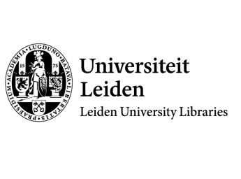

This overview is based on this XML output of the GLAMorous tool d.d. 21-03-2024.
It was generated using the GLAMorousToHTML code.
Also see the documentation of this tool.
This data is also available as an Excel file. More structured data formats (csv, json) will be added in the future.
Available languages
English (1.033)
Dutch (797)
Indonesian (739)
German (470)
French (317)
Russian (217)
Spanish (116)
Italian (113)
Egyptian Arabic (111)
Japanese (109)
Arabic (88)
Malay (87)
Chinese (76)
Minangkabau (72)
Esperanto (68)
Swedish (64)
Portuguese (63)
Catalan (59)
Ukrainian (51)
Korean (49)
Czech (47)
West Frisian (47)
Polish (46)
Persian (44)
Balinese (39)
Bangla (35)
Danish (35)
Nynorsk (33)
Tamil (31)
Vietnamese (31)
Javanese (29)
Serbian (29)
Sundanese (27)
Cebuano (26)
Hungarian (26)
Basque (25)
Hebrew (25)
Slovene (24)
Greek (23)
Turkish (22)
Azerbaijani (21)
Latin (21)
Romanian (19)
Belarusian (18)
Eastern Armenian (18)
Thai (18)
Malayalam (17)
Finnish (16)
Georgian (16)
Afrikaans (14)
Galician (14)
Hindi (14)
Asturian (13)
Bulgarian (13)
Serbo-Croatian (13)
Banjar (12)
Uzbek (12)
Croatian (10)
Macedonian (10)
Urdu (10)
Irish (9)
Lithuanian (9)
Tatar (9)
Telugu (9)
Central Bikol (8)
Ido (8)
Maltese (8)
Papiamento (8)
South Azerbaijani (8)
Hausa (7)
Marathi (7)
Nynorsk (7)
Occitan (7)
Punjabi (7)
Standard Estonian (7)
Welsh (7)
Burmese (6)
Cantonese (6)
Latvian (6)
Sinhala (6)
Kazakh (5)
Punjabi (5)
Tagalog (5)
Acehnese (4)
Albanian (4)
Bashkir (4)
Gujarati (4)
Haitian Creole (4)
Limburgish (4)
Madurese (4)
Malagasy (4)
Sorani (4)
West Flemish (4)
Yoruba (4)
Assamese (3)
Banyumasan Javanese (3)
Dutch Low Saxon (3)
Igbo (3)
Kannada (3)
Kurmanji (3)
Ligurian (3)
Maithili (3)
Mazanderani (3)
Moroccan Darija (3)
Odia (3)
Tachelhit (3)
Toba Batak (3)
Alemannic (2)
Bosnian (2)
Breton (2)
Faroese (2)
Gorontalo (2)
Icelandic (2)
Interlingua (2)
Luxembourgish (2)
Mingrelian (2)
Nepali (2)
Nias (2)
Santali (2)
Sindhi (2)
Slovak (2)
Standard Moroccan Amazigh (2)
Walloon (2)
Western Armenian (2)
Wu Chinese (2)
Zeelandic (2)
Aragonese (1)
Aramaic languages (1)
Bhojpuri (1)
Chechen (1)
Chuvash (1)
Cornish (1)
Dagbani (1)
Doteli (1)
Franco-Provençal (1)
Ilocano (1)
Interlingue (1)
Kapampangan (1)
Kinyarwanda (1)
Kyrgyz (1)
Lombard (1)
Mon (1)
Mongolian (1)
Navajo (1)
Norman (1)
Ossetian (1)
Picard (1)
Piedmontese (1)
Sanskrit (1)
Sardinian (1)
Saterland Frisian (1)
Scots (1)
Scottish Gaelic (1)
Sicilian (1)
Southern Quechua (1)
Swahili (1)
Tajik (1)
Tibetan (1)
Tulu (1)
Veps (1)
Volapük (1)
Waray (1)
Yiddish (1)
Zazaki (1)
Zulu (1)
English (1.033)
0-6-0 |
12 cm K.A. |
1520s |
1526 |
1640s |
1647 |
1690s |
1692 |
1700s (decade) |
1706 |
1710s |
1713 |
1719 |
1766 Istanbul earthquake |
1770s |
1774 |
1839 |
1852 Banda Sea earthquake |
1883 eruption of Krakatoa |
1901 |
1930 Dutch East Indies census |
1946 Apeldoorn aircraft crash |
1970 |
2021 in Indonesia |
30 September Movement |
A Christian Reflection on the New Age |
Aaron ben Elijah |
Abdoe'lxarim MS |
Abdoel Gaffar Pringgodigdo |
Abdul Rasjid |
Abdul Samad of Selangor |
Abdullah bin Alwi Alatas |
Abhimanyu |
Abraham Lambertsz van den Tempel |
Abu Bakar Royal Mosque |
Abu Bakar of Johor |
Acehnese people |
Adolphus Vorstius |
Adonara |
Adriaan Heereboord |
Adriaan Kluit |
Adriaan van Royen |
Adzuki bean |
Aelius Everhardus Vorstius |
Aeta people |
Agats |
Ahmad Zaki Pasha |
Alan of Galloway |
Alapini Vina |
Alauddin Muhammad Da'ud Syah II |
Albert Schultens |
Alberto Giacometti |
Alexander Andries Maramis |
Alexine Tinne |
Alfred Bel |
Alfred von Kremer |
Aliarcham |
Aluku |
Amaranthus tricolor |
Ambarawa Railway Museum |
Amir Pasaribu |
Amir Sjarifuddin |
Ampera Cabinet |
Amsterdam Impressionism |
Anatomical theatre |
Ancient Indian architecture |
Andalusians |
Angèle Sydow |
Anthony Ashley Bevan |
Anthony Modderman |
Antoine Cabaton |
Anton Eduard van Arkel |
Anton Prinner |
Antonius Hulsius |
Antonius Walaeus |
Apalon (village) |
Arawak |
Archibald Cary Coolidge |
Archibald Charteris |
Architecture of India |
Architecture of Singapore |
Arctium lappa |
Ario Soerjo |
Armagnac–Burgundian Civil War |
Armenians in Surabaya |
Arnold Aletrino |
Asparagus bean |
Assassination of John the Fearless |
Astana Gede inscriptions |
Astronomical chronology |
Attorney General's Office of Indonesia |
Auberge Ravoux |
August 1933 |
August 1950 |
Bahay na bato |
Bahulara Ancient Temple |
Bajo |
Baju Lamina |
Baldus de Ubaldis |
Bandar Charak |
Bandung railway station |
Bangil railway station |
Bangladesh–Indonesia relations |
Bangsawan |
Bania (caste) |
Bara Imambara |
Barakar |
Baris dance |
Barred honey buzzard |
Batak |
Batik |
Battle of Plaman Mapu |
Battle of Tolbiac |
Bawean people |
Beach Street, George Town |
Beb Vuyk |
Bedhaya |
Behn Meyer |
Belanda Hitam |
Bene Israel |
Bengal temple architecture |
Bengkulu |
Beppu Onsen |
Berber orthography |
Bernard Picart |
Betel nut chewing |
Bhairava |
Bharhut |
Bhutesvara Yakshis |
Binjai railway station |
Bishari tribe |
Blitar |
Blitar railway station |
Blora Residency |
Bodri River |
Bokhoven Castle |
Bonaventura Vulcanius |
Boniville |
Bontoc people |
Borivali |
Borobudur |
Boven-Digoel concentration camp |
Brassica rapa |
British Malaya |
Bromo-class sloop |
Buckwheat |
Buddhist symbolism |
Buduran railway station |
Bugis |
Buitenzorg Residency |
Buleleng, Bali |
Buleleng Regency |
Bullenbaai |
Bung Karno Seclusion House |
Burchard Joan Elias |
Burhanuddin Harahap Cabinet |
Burma Railway |
Burmah Road, George Town |
CONEFO |
Cairo Citadel Clock |
Calabash |
Canavalia gladiata |
Candi of Indonesia |
Carel Isaak de Moor |
Caribbean |
Carl Schwartz |
Carlo Alfonso Nallino |
Carolus Clusius |
Caspar Reuvens |
Cassiodorus |
Cassipora |
Catholic Church in the Philippines |
Censorship in the Dutch East Indies |
Centaurium erythraea |
Central Papua |
Centrum, Paramaribo |
Charles H. Wood |
Charles J. Kleingrothe |
Charles James Lyall |
Charles Richard Crane |
Chaulukya dynasty |
Chennai Lighthouse |
Chennai Port |
Chili pepper |
Chinese Maluku |
Chinese Singaporeans |
Chinese Surinamese |
Chives |
Chola invasion of Srivijaya |
Christianity in the Philippines |
Church of North India |
Ciaruteun inscription |
Cimahi railway station |
Cinnamomum |
Cipto Mangunkusumo |
City Hall, Penang |
Clan Fergusson |
Clément Huart |
Colin Mackenzie |
College of Engineering, Pune |
Colon Street |
Colonial architecture in Jakarta |
Colonial architecture in Surabaya |
Colonial troops |
Commissioners-General of the Dutch East Indies |
Company rule in the Dutch East Indies |
Conditional preservation of the saints |
Congregation of France |
Congress Hall (Paramaribo) |
Constance Sydney Holmes |
Cornelis de Man |
Coropina Creek |
Cottica Mountain |
Crag Hotel |
Cryptotaenia japonica |
Cut Nyak Dhien |
Dahabeah |
Daikon |
Dance in Malaysia |
Daniël Heinsius |
David George Hogarth |
David Pierre Giottino Humbert de Superville |
David Samuel Margoliouth |
David Sassoon (treasurer) |
David Sassoon Library |
Dayak people |
De-Sukarnoization |
De-industrialisation of India |
Deaths in 1980 |
December 25 (Eastern Orthodox liturgics) |
December 29 (Eastern Orthodox liturgics) |
Deforestation |
Deli River |
Denpasar Conference |
Depok railway station |
Devi Dja |
Diemen |
Dieng Plateau |
Dijkpoort |
Dioscorea bulbifera |
Diponegoro |
Dirk van Hogendorp (1761–1822) |
Discrimination against Chinese Indonesians |
Djajadiningrat family |
Djuanda Cabinet |
Doddabasappa Temple |
Dodokan River |
Domburg, Suriname |
Dragon's teeth (mythology) |
Droogdok Maatschappij Soerabaja |
Duncan Black MacDonald |
Dutch Indies literature |
Dutch Surinamese |
Dutch colonial empire |
Dwikora Cabinet |
Early Ottoman architecture |
Echinochloa esculenta |
Edmond Doutté |
Edouard Hamman |
Edward Granville Browne |
Eggplant |
Einkorn wheat |
Eka-tantri Vina |
Emily Ruete |
Emmanuel Cosquin |
Emmy Andriesse |
Encyclopaedia of Islam |
Enguerrand de Monstrelet |
Enrico Di Brocchetti |
Ephrata, Suriname |
Erasmus University Rotterdam |
Ernest Douwes Dekker |
Ernst Morgenthaler |
Eugen Mittwoch |
European science in the Middle Ages |
Everhardus Johannes Potgieter |
Faculty of Law, University of Indonesia |
Fatih Mosque, Istanbul |
Fergus of Galloway |
Festus Hommius |
Fez, Morocco |
First Ali Sastroamidjojo Cabinet |
First Amir Sjarifuddin Cabinet |
First Hatta Cabinet |
First Sjahrir Cabinet |
First Working Cabinet |
Firuz-Shah Zarrin-Kolah |
Fitzgerald Bridge, Pune |
Flag of the Netherlands |
Flags and emblems of Majapahit |
Flame palmette |
Flood |
Formulary of Marculf |
Fort Nassau (Curaçao) |
Fort Pilar |
Fort San Felipe (Cavite) |
Fort Sommelsdijk |
Fort São Vicente (Sagres) |
Fort Tolukko |
Fort Vastenburg |
Fourth Working Cabinet |
Franciscus Junius (the elder) |
Franciscus Raphelengius |
Franco Burgersdijk |
Franz Boas |
Frederik Kaiser |
Friedrich Balduin von Gagern |
GANEFO |
Gabriel Ferrand |
Gabriel Lekegian |
Gambir railway station |
Gamelan |
Gandrung |
Garden of Palms |
Gaston Billotte |
Gaston Bonet-Maury |
Gawain |
Geesje Kwak |
Gemma Frisius |
Geoffrey (archbishop of York) |
George Hendrik Breitner |
George Town, Penang |
Germanicus |
Gerrit Bolhuis |
Gerrit van der Veen |
Gillis Smak Gregoor |
Glossary of French words and expressions in English |
Godo Holo |
Gondeshwar Temple, Sinnar |
Gondokoro |
Gorontalo (city) |
Gorontalo people |
Gothic War (535–554) |
Gourd mouth organ |
Gouvernment of Atjeh and Dependencies |
Government of Singapore |
Governor of the Netherlands Antilles |
Grand Bazaar, Isfahan |
Grave of Sukarno |
Great Depression in the Netherlands |
Gubeng, Gubeng, Surabaya |
Gupta Empire |
Gupta art |
Gustaaf Adolf Frederik Molengraaff |
Gustaaf Schlegel |
Gusti Nurul |
Guðrøðr Óláfsson |
H. G. van de Sande Bakhuyzen |
HNLMS Atjeh |
HNLMS Banckert (1929) |
HNLMS De Ruyter (1901) |
HNLMS Hoofdinspecteur Zeeman |
HNLMS Orion (1912) |
HNLMS Rigel (1931) |
HNLMS Tromp (1877) |
Halim Cabinet |
Hamengkubuwono IX |
Hamengkubuwono VII |
Hans Fischer (painter) |
Harry Kuneman |
Heinrich Hertz |
Hellenistic influence on Indian art |
Hellfire Pass |
Hendrik Lodewijk Drucker |
Hendrik Lorentz |
Hendrik Nicolaas Werkman |
Hendrik Tillema |
Henri Bergson |
Henri van de Waal |
Henriëtte Bosmans |
Henry Albert Schultens |
Henry Ellis (librarian) |
Henry Hardinge, 1st Viscount Hardinge |
Hereditary politicians |
Herman Coster |
Highland Papua |
Hinduism in Suriname |
History of Curaçao |
History of George Town, Penang |
History of Kuala Lumpur |
History of Madhya Pradesh |
History of Malaysia |
History of Penang |
History of Sunda Kingdom |
History of Sundanese language |
History of Thailand |
History of astronomy |
History of electromagnetic theory |
History of rice cultivation |
History of special relativity |
History of the Malay language |
History of the Royal Malaysia Police |
History of the concept of creativity |
Hoesein Djajadiningrat |
Hollandsch Inlandsche Kweekschool |
Hong Lim Park |
Hooker with a heart of gold |
Horniman Circle Gardens |
Hosay |
House of Plantagenet |
House of Representatives (Indonesia) |
House of Representatives of the United States of Indonesia |
Hubert Murray |
Hudoq |
Hugo Grotius |
Hugo Krabbe |
Hyang |
I Ketut Gedé |
Ibn Hazm |
Ignazio Guidi |
Ignác Goldziher |
Iloilo City |
Indian Singaporeans |
Indo-Surinamese |
Indonesia |
Indonesia Accuses |
Indonesian National Party |
Indonesian art |
Indonesian cuisine |
Indonesian language |
Indonesian martial arts |
Inini (river) |
Interlace (art) |
Isaac Gosset (sculptor) |
Isabeau of Bavaria |
Isidore van Kinsbergen |
Isnag people |
Iyo Province |
Izzeddin Hasanoghlu |
J. P. B. de Josselin de Jong |
Jaap Stotijn |
Jacob Eduard van Heemskerck van Beest |
Jacob Gijsbert Boerlage |
Jacob Merkelbach |
Jacobus Cruquius |
Jacobus Kann |
Jacques Bernard (theologian) |
Jain art |
Jakarta Charter |
Jakob Seydelmann |
Jakob Thomasius |
Jamalul Kiram II |
Jambi Sultanate |
James Hamilton (minister, born 1814) |
James Hastings |
Jan Bake |
Jan Fabricius |
Jan Hendrik Brandon |
Jan Jacob Schultens |
Jan Pieterszoon Coen |
Jan Toorop |
Jan Wichers |
Jan van der Hoeven |
Jaro Cathedral |
Jatinegara railway station |
Java arquebus |
Javanese Kshatriya |
Javanese dance |
Jean-Nicolas-Sébastien Allamand |
Jean Curtius |
Jean Le Clerc (theologian) |
Jean Pierre Moquette |
Jengki style |
Jiuqu Xi |
Joan Voûte |
Joannes Antonides van der Linden |
Job's tears |
Jodensavanne |
Jodensavanne internment camp |
Johan Hendrik Caspar Kern |
Johanna Helena Herolt |
Johannes Gabrielse |
Johannes Hendricus van der Palm |
Johannes Jacobus Rau |
Johannes Kuenen |
Johannes Walaeus |
Johannes van Heerdt tot Eversberg |
John Angell James |
John Horris Sprockel |
John Howson (priest) |
John Ingram Lockhart (writer) |
John the Fearless |
Johnston's Pier |
Jona Willem te Water |
Josef Horovitz |
Josef Strzygowski |
Joseph Chailley |
Joseph Justus Scaliger |
Judo |
Juggernaut |
Julius Tahija |
Jurriaan de Friderici |
Kahuripan |
Kalebaskreek |
Kalesa |
Kali Bekasi |
Kalibata Heroes Cemetery |
Kanthaka |
Kapitan Cina |
Karmawibhangga Museum |
Kartini |
Kassian Cephas |
Kathiawar |
Kayan people (Borneo) |
Kebab |
Kebaya |
Kebayoran Baru |
Kediri Kingdom |
Keluri |
Kemayoran railway station |
Kendang |
Kho Tjoen Wan |
Kingdom of Kaimana |
Kinnara |
Kinnari vina |
Kiradu temples |
Kirsopp Lake |
Klaten railway station |
Klingalese |
Koedoes Residency |
Koningin Emmaschool (Surabaya) |
Koninklijke Paketvaart-Maatschappij |
Konkaikōmyō-ji |
Koto (traditional clothing) |
Krotos |
Kuala Kangsar (town) |
Kuala Lumpur |
Kupiah |
Kusakabe Kimbei |
Kuwai |
Lablab |
Labuhan Deli |
Lalitaditya Muktapida |
Landhuis |
Languages in censuses |
Lasminingrat |
Latin Psalters |
Lectionary |
Leiden Aratea |
Leiden University |
Leiden University Library |
Leiden anatomical theatre |
Lematang River |
Lenin Peace Prize |
Leuit |
Levinus Warner |
List of Cultural Properties of the Philippines in Calabarzon |
List of Dacian plant names |
List of Dutch-language writers |
List of Grade I heritage structures in Pune |
List of Huguenots |
List of Minangkabau people |
List of State Protected Monuments in Rajasthan |
List of ancient Romans |
List of bridges in the Philippines |
List of chief guests at Delhi Republic Day parade |
List of church buildings in Indonesia |
List of colonial buildings in Bandung |
List of colonial buildings in Medan |
List of colonial governors of Papua New Guinea |
List of colonial governors of Suriname |
List of colonial governors of the Dutch Gold Coast |
List of florilegia and botanical codices |
List of governors of Singapore |
List of governors of the Dutch East Indies |
List of havezates in Drenthe |
List of heads of government who were later imprisoned |
List of heads of state of the United States of Indonesia |
List of key works of Carolingian illumination |
List of members of the Senate of the United States of Indonesia |
List of ministers of defense (Indonesia) |
List of ministers of justice of the Netherlands |
List of national founders |
List of nominees for the Nobel Prize in Literature |
List of organisms named after famous people (born 1900–1949) |
List of people from Amsterdam |
List of people from Bruges |
List of presidents of Indonesia |
List of rectores magnifici of Leiden University |
List of works by Chairil Anwar |
Lithuanian Provisional Governing Commission |
Livorno, Suriname |
Lloyd Sabaudo |
Lontara script |
Louis Johan Alexander Schoonheyt |
Luffa |
MS Achille Lauro |
MS Van Heutsz (1926) |
Maarten Buysman |
Machmud Singgirei Rumagesan |
Madsen machine gun |
Maghrebi script |
Mahavira Jain temple, Osian |
Mahyuddin Datuk Sutan Maharadja |
Majapahit |
Mak yong |
Malay Singaporeans |
Malay folklore |
Malay language |
Malays (ethnic group) |
Malaysia Federal Route 55 |
Malaysian Indians |
Malaysian popular music |
Malaysians of Indonesian descent |
Mamianqun |
Mandarin (bureaucrat) |
Manggarai railway station |
Mangkunegara IV |
Mangkunegara VIII |
Manikyala Stupa |
Manila Central Post Office |
Manipa |
Manjushri |
Mankiala |
Manlobi |
Maos railway station |
Marco Kartodikromo |
Marcus Jordanus |
Marhaenism |
Maria Antonia Merkelbach |
Marie Crous |
Marie Rosalie Bertaud |
Mariniersbrigade |
Maripaston |
Martand Sun Temple |
Martinus Schouman |
Masa'il Abdallah ibn Salam |
Master of the Prayer Books of around 1500 |
Mata Hari |
Mataram Kingdom |
Matawai people |
Mathura |
Matraman railway station |
Matthew 2:2 |
Maurits Adriaan de Savornin Lohman |
Medan |
Medan railway station |
Medieval art |
Member states of the United Nations |
Metamorphoses in Greek mythology |
Michael Rockefeller |
Michelle of Valois |
Michiels Monument, Padang |
Minangkabau people |
Mining in Malaysia |
Minto Stone |
Mohammed Awzal |
Mongol invasion of Java |
Monseñor Nouel Province |
Monument to Garibaldi (Rome) |
Moroccan literature |
Mosque architecture in Indonesia |
Mount Merapi |
Mount Papandayan |
Mount Santo Tomas |
Mount Tidar |
Mucuna pruriens |
Muhammad Kaharuddin III |
Muhammad of Negeri Sembilan |
Mungathala |
Museum Boerhaave |
Museum of National Awakening |
Myoga |
Myōhō–ji |
Mātali |
Naqsh-e Jahan Square |
Nasakom |
National Hero of Indonesia |
National Museum of Singapore |
National costume of Indonesia |
Natsir Cabinet |
Naval Base Manila |
Nederlandsch-Indische Escompto Maatschappij |
Nederlandsch-Indische Handelsbank |
Nederlandsch-Indische Levensverzekerings en Lijfrente Maatschappij |
Nederlandsch-Indische Spoorweg Maatschappij |
Netherlands Armed Forces in Suriname |
Ngawi (town) |
Nila (Ramayana) |
Nissewaard |
Nivatakavacha |
Northam Road, George Town |
Nunobiki Falls |
Nurul Iman Mosque of Koto Gadang |
Nyonya The Tiang Ek |
Nāga |
Ohannes Kurkdjian |
Oil well |
Old Jaro Municipal Hall |
Old Sundanese language |
Old Sundanese script |
Ombilin Coal Mine |
Opak River |
Operation Trikora |
Ophiuchus (astrology) |
Orenstein & Koppel |
Oriomo River |
Orion (constellation) |
Osian, Jodhpur |
Otis A. Merrill |
Oton |
Ottoman architecture |
Outline of Suriname |
Overseas Indonesians |
Overvalwagen |
Ovia Olo |
P. J. Cosijn |
Pacu Jalur |
Padang Rengas |
Padangsidempuan |
Paddy field |
Pahang |
Paku Alam II |
Paku Alam V |
Paku Alam VII |
Pakubuwono VIII |
Paledang |
Palembang Mayoral Office |
Paradoxa Stoicorum |
Parahyangan |
Parangtritis |
Parindra |
Paseki |
Pasoeroean Stoomtram Maatschappij |
Pasuruan |
Pasuruan railway station |
Pataini temple |
Pataliputra capital |
Pathari |
Paul Schwarz |
Paul Tannery |
Paul Verlaine |
Paulus Adrianus Daum |
Penang |
Penang High Court |
Penang National Park |
Pencak silat |
Perak |
Percy F. Frankland |
Percy Stafford Allen |
Perdana Botanical Gardens |
Perilla frutescens |
Perizonius |
Pernis (bird) |
Persicaria |
Petasites japonicus |
Petrus Houttuyn |
Petrus Johannes Blok |
Petrus Josephus Zoetmulder |
Pettit Barracks |
Philipp Reinhard Vitriarius |
Phoa Tjoen Hoat |
Phoa Tjoen Hoay |
Pierre Curie |
Pierre Victor, baron Malouet |
Pieter Haaxman |
Pieter Nieuwland |
Pieter Rijke |
Pieter van Bloemen |
Pieter van Musschenbroek |
Pig roast |
Pinang scissor |
Poetry of Scotland |
Pompeo Targone |
Pontianak |
Port Dickson (town) |
Port of Penang |
Port of Singapore |
Prambanan |
Prambanan Temple Compounds |
Pranala |
President for life |
Presidential Cabinet (Indonesia) |
Prime Minister of Indonesia |
Prosper Marchand |
Prostitution in Japan |
Provisional House of Representatives |
Psalm 1 |
Psalter of Saint Louis |
Pseudo-Apuleius |
Pune |
Putussibau |
Quirijn Maurits Rudolph Ver Huell |
Qungua |
Qutb Minar |
RMS Mauretania (1906) |
Raden Gupolo |
Raffles Place |
Rail transport in Malaysia |
Rail transportation in the Philippines |
Raj Bhavan, Kolkata |
Raj Bhavan, Pune |
Rajendra I |
Randai |
Ranganathaswamy Temple, Srirangam |
Ras El Tin Palace |
Rattanakosin Kingdom (1782–1932) |
Rawd al-Qirtas |
Regency (Indonesia) |
Reinhold Rost |
Rengat massacre |
Renward Brandstetter |
René Basset |
Republic of the United States of Indonesia Cabinet |
Revised Dwikora Cabinet |
Riau |
Rice |
Rice barn |
Richard Archbold |
Richard Gottheil |
Richard James Wilkinson |
Richard Ligon |
Robert Couturier (sculptor) |
Roman de Fergus |
Roman van Ferguut |
Royal Photographic Society |
Royal Rotterdam Lloyd |
Rubber tapping |
Rudolf Ernst Brünnow |
Rumah Cililitan Besar |
Rǫgnvaldr Guðrøðarson |
SMS Hildebrand |
SM City Baguio |
SS Goentoer |
SS Lurline (1932) |
SS Prinses Amalia |
SS Statendam (1924) |
SS Van Heemskerk |
SS Van Waerwijck |
Sachiya Mata Temple |
Sacred lotus in religious art |
Safavid art |
Salawati Kingdom |
Salomon van Til |
Sam Poh Tong Temple |
Samuel Landauer |
San Fernando, Pampanga |
San Francisco |
San Francisco Bay Area |
San José de Ocoa |
San Sebastian Church (Manila) |
Sanchi |
Sandur State |
Santiago Province (Dominican Republic) |
Sapeh |
Sarak |
Sarkies Brothers |
Sarong |
Sawah Besar railway station |
Sawahlunto |
Scottish literature in the Middle Ages |
Sebald Justinus Brugmans |
Second Ali Sastroamidjojo Cabinet |
Second Amir Sjarifuddin Cabinet |
Second Hatta Cabinet |
Second Revised Dwikora Cabinet |
Second Sjahrir Cabinet |
Second Working Cabinet (Sukarno) |
Sembah |
Seremban |
Sesame |
Seuna (Yadava) dynasty |
Shakib Arslan |
Shell plc |
Shilha language |
Shilha literature |
Shunga Empire |
Siak Sri Indrapura Palace |
Siege of Leiden |
Siege of Maastricht (1673) |
Siege of Ostend |
Simon Stevin |
Singapore |
Singapore in the Straits Settlements |
Singaporeans |
Sipaliwini River |
Siping-siping |
Siwart Haverkamp |
Sjafruddin Emergency Cabinet |
Sjafruddin Prawiranegara |
Slavery in Asia |
Slavery in Saudi Arabia |
Soedjatmoko |
Soekiman Cabinet |
Soetardjo Petition |
Solo Balapan railway station |
Solo Jebres railway station |
Solu |
Songket |
Songkok |
South Papua |
Southwest Papua |
Soybean |
Soybean sprout |
Spaanse Water |
Spaghetti squash |
Spanish colonial fortifications in the Philippines |
Srimpi |
Staatsspoorwegen |
Star of the Republic of Indonesia |
State Attorney of the Transvaal |
State of East Indonesia |
Stedelijk Gymnasium Leiden |
Stoelmanseiland |
Straits Settlements |
Sugar industry of the Philippines |
Sukarno |
Sulaeman Sastrawinata |
Sulaiman of Selangor |
Sultan Agung of Mataram |
Sultan of Selangor |
Sultanate of Langkat |
Sumba |
Sumitro Djojohadikusumo |
Sunda Kingdom |
Sungai Besi |
Supersemar |
Supreme Advisory Council |
Surabaya Dock of 14,000 tons |
Surabaya Gubeng railway station |
Surabaya Kota railway station |
Surabaya Synagogue |
Suriname |
Surinamese Maroons |
Susanto Cabinet |
Sweet potato |
Tableau vivant |
Taj Mahal Palace Hotel |
Tamarkan |
Tamil Malaysians |
Tammenga |
Tan Malaka |
Tanah Abang |
Tanah Abang railway station |
Tangerang |
Tanglin Club |
Tanjong Tokong |
Tanjung Morawa affair |
Tanjung Timur |
Tapanahony |
Tapanahony River |
Tapanoeli Residency |
Tara (Buddhism) |
Tarakeshwara Temple, Hangal |
Taro |
Tarumanagara |
Teko people |
Telkupi |
Temple of Fortuna Muliebris |
Teuku Umar |
The Amazing Race Asia 1 |
The Bengal Club |
The Denial of the Historicity of Jesus in Past and Present |
The Eight Great Events in the Life of Buddha |
The Liep Nio |
The Residency, Penang |
The Ring of the Dove |
Theodor Juynboll |
Theodor Nöldeke |
Thesis |
Thilly Weissenborn |
Third Sjahrir Cabinet |
Third Working Cabinet |
Thomas Anderson (botanist) |
Thomas Walker Arnold |
Thérèse Schwartze |
Tiberius Hemsterhuis |
Tinikling |
Tjokorda Gde Raka Soekawati |
Tjong A Fie |
Tjong Yong Hian |
Tobacco |
Topeng dance |
Transition to the New Order |
Transportation in Metro Manila |
Trees Sunito Heyligers |
Trunajaya |
Tyersall Park |
Ulsoor |
Ulu scripts |
United Nations |
Untung Jawa (Amsterdam Island) |
Uparkot Caves |
Urbanus Pardede |
VOC opperhoofden in Japan |
Vaishnavism in Ancient Tamilakam |
Van Lynden van Sandenburg cabinet |
Vehicle registration plates of Indonesia |
Verbena officinalis |
Vice President of Indonesia |
Vigna umbellata |
Vinata |
Vivere pericoloso |
Waikabubak |
Walter Chalmers Smith |
Walter Linck |
Wat Prayurawongsawat |
Water caltrop |
Watermelon |
Wawa of Mataram |
Wayang |
Wayang beber |
Wayang wong |
West New Guinea dispute |
West Sumatra |
Westland (municipality), Netherlands |
Whitley Stokes (Celtic scholar) |
Wilhelm Max Müller |
Wilhelmus Wilhelmius |
Willem 's Gravesande |
Willem Christiaan van Manen |
Willem Frederik Reinier Suringar |
Willem Hendrik Johan van Idsinga |
Willem Hubert Nolens |
Willem Isaacsz. van Swanenburg |
Willem Jozef Andreas Jonckbloet |
Willem Kloos |
Willem Rooseboom |
Willem Witsen |
William Farquhar |
William Hastie |
William Robertson Smith |
William Wright (orientalist) |
Willy Corsari |
Wilopo Cabinet |
Witsen (family) |
Wongsa Dhiraj Snid |
Woodlands, Singapore |
Wright Park (Baguio) |
Wuyi Mountains |
Xi River |
Yogyakarta railway station |
Áo giao lĩnh
Dutch (797)
's Lands Hospitaal |
't Vertrouwen |
11 september |
1620 |
22 juni |
474 |
519 |
7 augustus |
A.S.C. Wallis |
Abenaston |
Abrabroki |
Abraham Capadose |
Abraham Ortelius |
Academiegebouw (Leiden) |
Academisch Historisch Museum |
Adam van Kan |
Adawai |
Adegeest (kasteel) |
Adolf le Comte |
Adriaan Heynsius |
Adriaan Kluit |
Adriaan Reland |
Adriaan van Royen |
Adrianus Eversen |
Adukiboon |
Afwikkelingsbewind |
Albert Cornelis Vreede |
Albert Funke Küpper |
Albert Hahn |
Alberto Giacometti |
Albertus Schultens |
Album amicorum |
Alexander Cohen |
Alexander Willem Frederik Idenburg |
Alexine Tinne |
Algemeene Maatschappij van Levensverzekering en Lijfrente |
Alida van Houten |
Alkmaar (Suriname) |
Amarant (geslacht) |
Amperakabinet I |
Amstleven |
Anatomisch theater |
Angèle Sydow |
Ankersmit (textielfabriek) |
Anna Gildemeester |
Anne Siberdinus de Blécourt |
Anneke van der Feer |
Annette Versluys-Poelman |
Annie Besant |
Anthony Brummelkamp (1811-1888) |
Anthony Christiaan Winand Staring |
Anthony Hendrik van der Boon Mesch |
Anthony Modderman |
Antoine Paul Nicolas Franchimont |
Anton Eduard van Arkel (scheikundige) |
Anton Gerard van Hamel (predikant) |
Antonius Hirschig Cz. |
Antonius Walaeus |
Antonius van der Linde |
Apatou (plaats) |
Architectuur in Nederlands-Indië |
Arent Jan Wensinck |
Arij Prins |
Arnold Adriaan Bake |
Arnold Borret (1848-1888) |
Arnold Willem Kort |
Arthur van Schendel (schrijver) |
Atambua (stad) |
Atjehmonument |
Aubergine (plant) |
Auke Komter |
Balata |
Bali Hotel |
Banjarmulya |
Banyumudal (Moga) |
Barthold Jacob Lintelo de Geer van Jutphaas |
Bartholomeus Sloet tot Oldhuis |
Bataafse Petroleum Maatschappij |
Batak (paard) |
Batavia (Coppename) |
Batinge |
Beb Vuyk |
Beekhuizen (Paramaribo) |
Beleg van Dordrecht (1304) |
Beleg van Leiden (1573-1574) |
Belu (regentschap) |
Bene Israël |
Benjamin Frederik Matthes |
Bep Schrieke |
Beracha Ve Shalom |
Berend Albertus Kwast |
Berend George Escher |
Berend Zweers |
Bernard Willem Paul Acket |
Bersiap |
Bertus Sondaar |
Bethesda (leprozerie) |
Betsy van Vloten |
Bister (kleur) |
Bivak-eiland |
Bloedbad van Rengat |
Bocke van Feytsma |
Boek van de natuur |
Boekverluchting |
Boekweit |
Boeroes |
Bokaal |
Bonaventura Vulcanius |
Borduren |
Bosscha-observatorium |
Brassica rapa |
Braziliaanse rubberboom |
Brouwerslust |
Bruinendaal |
Bullenbaai |
Burchard Joan Elias |
Callantsoog |
Capitulatie (handelsverdrag) |
Carel Scharten |
Carolus Clusius |
Caspar Reuvens |
Cassiodorus |
Cassipora (dorp) |
Catharina Louisa Maria Alberdingk Thijm |
Catharina Sophia |
Cavalerie |
Centraal-Nieuw-Guinea-expeditie |
Ceru Colorado |
Chaja Ruchel Goldstein |
Charles Adriaan van Ophuijsen |
Charles Howard Hodges |
Charles Péguy |
Charles van der Plas |
Chilipeper |
Chinese Surinamers |
Cholera-uitbraak in Nederland in 1866 |
Chris Lebeau |
Christiaan Cornelis Kannemans |
Christiaan Karel Hoffmann |
Christiaan van Lennep (1828-1908) |
Christian Wilhelm Janssen |
Christina I van Zweden |
Christophorus Buys Ballot |
Christophorus Wittichius |
Chronograaf van 354 |
Cicurug |
Cideng |
Ciliwung |
Clémence Pruijs van der Hoeven |
Commewijnestraat |
Conrad Busken Huet |
Conrad Theodor van Deventer |
Conservenfabriek |
Contractarbeid |
Cornelis Chastelein |
Cornelis Jacobus van Assen |
Cornelis Jan Simonsz. |
Cornelis Marinus Pleyte |
Cornelis Petrus Tiele |
Cornelis Pruijs van der Hoeven |
Cornelis de Man |
Cornelis van Aerssen van Sommelsdijck |
Cornelis van Arendonk |
Cornelis van Schaick |
Cornelis van Vollenhoven (1874-1933) |
Cornelis van der Mijle |
Coropinakreek |
Cosman Citroen |
David Jacob van Lennep (1774-1853) |
David Pièrre Giottino Humbert de Superville |
David Ruhnken |
David Sassoon |
De Blauwe Schuit (uitgeverij) |
De ambassade van Jan Smidt naar de sjah van Perzië |
Derde Archbold-expeditie |
Diederik Sonoy |
Dijkveld |
Diponegoro |
Dirc Potter |
Dirk Langendijk |
Dirk van Hogendorp (1761-1822) |
Dolok Sanggul (onderdistrict) |
Duizendknoop |
Durk van Blom |
Edouard Hamman |
Edward Granville Browne |
Eelco Verwijs |
Eenkoren |
Egyptische dagen |
Elias Annes Borger |
Elisabeth Buys |
Elisabeth Hasebroek |
Elise van Calcar |
Ellsworth Huntington |
Emeri van Donzel |
Emil Selenka |
Emily Ruete |
Emmy Andriesse |
Enguerrand de Monstrelet |
Ephrata (Suriname) |
Ernest Renan |
Etnabaai |
Everhardus Johannes Potgieter |
Evert Zoudenbalch (1424-1503) |
Ferdinand Jacob Domela Nieuwenhuis |
Ferguut |
Festus Hommius |
Fluweelboon |
Fort (Colombo) |
Fort Galle |
Fort Mosselstein |
Fort Nieuw-Amsterdam |
Fort Sommelsdijk |
Francis Koene |
Franciscus Darlang |
Franco Petri Burgersdijk |
Frank van der Goes |
Frans Erens |
Frans Ghijsels |
Frans van Schooten |
Franz Ziegler |
François Tack |
Frederick Dekkers |
Frederik Anthony Hartsen |
Frederik Oudschans Dentz |
Frederik van Hogendorp (1843-1889) |
Frederiksdorp |
Fredrik Pijper |
Fredrika Bremer |
Fri Heil |
Friedrich Anton Wilhelm Miquel |
Friedrich Balduin von Gagern |
Frits van Daalen (1863-1930) |
Ganzenbord |
Garibaldimonument (Rome) |
Gebouw van de Internationale Crediet- en Handelsvereeniging Rotterdam |
Gemma Frisius |
Gentil Theodoor Antheunis |
George Hendrik Breitner |
Georges Gilles de la Tourette |
Gerard Altmann |
Gerard Bolland |
Gerard Sandifort |
Gerard Wttewaall van Wickenburgh |
Gerard den Brabander |
Gerardus Johannes Hengeveld |
Gerlof van Vloten |
Germaine Richier |
Gerret Pieter Rouffaer |
Gerrit Achterberg |
Gerrit Bolhuis |
Gerrit Kalff |
Gerrit Wildeboer |
Gertrudes Johannes Resink |
Geschiedenis van Indonesië |
Geschiedenis van Suriname |
Geschiedenis van de visteelt |
Gesinus Gerhardus Kloeke |
Gideon Jan Verdam |
Giessenburg (kasteel) |
Gildbrug |
Gilles-Lambert Godecharle |
Gilles Dionysius Jacobus Schotel |
Godo-olo |
Gouden koets (Yogyakarta) |
Goudwinning in Suriname |
Groenlo |
Groot Chatillon (leprozerie) |
Groot Poelgeest |
Grote Pastorie |
Grote Stadskerk |
Grote klit |
Gubeng (plaats) |
Gustaaf Molengraaff |
Gustaaf Schlegel |
Gymnasium Haganum |
Gérard de la Valette |
Haagse Kunstkring |
Hamengkubuwono VII |
Hansa-Brandenburg W.12 |
Harry Kuneman |
Hattem |
Heerenstraat (Paramaribo) |
Heike Kamerlingh Onnes |
Heilige lotus |
Hein Boeken |
Hein von Essen |
Heinrich Witte |
Hellenistische alchemie |
Helpoort (Maastricht) |
Helvetius van den Bergh |
Hendrick Berckman |
Hendricus Gerardus van de Sande Bakhuyzen |
Hendrik Albert Schultens |
Hendrik Alexander Ruysch |
Hendrik Bijlmer |
Hendrik Cock |
Hendrik Gerard Seelig |
Hendrik Jacob van der Heim |
Hendrik Juynboll |
Hendrik Kern |
Hendrik Krayer van Aalst |
Hendrik Lorentz |
Hendrik Tillema |
Hendrik Werkman |
Hendrik Willem Caspari |
Hendrik Willem Tydeman |
Hendrik van Oranje-Nassau |
Hendrikus Colijn |
Henri Bergson |
Henri Daalhoff |
Henricus Hondius (cartograaf) |
Henricus Jansen |
Henriëtte Bosmans |
Herman Coster |
Herman Deutmann |
Herman Diederik Joan van Schevichaven |
Herman Heuff |
Herman Tillemans |
Herman Tollius |
Herman Witsius |
Hermannus Oosterdijk Schacht |
Hermanus van Brussel |
Het mysterie van de Mondscheinsonate |
Hindoestanen |
Historische kaarten van Sint Eustatius |
Hoorspel |
Hotel des Indes (Batavia) |
Hr.Ms. Arend (1930) |
Hugo Krabbe |
Huibert Visnich |
Huis Appelenburg |
Huis Groeneveld |
Huis Loil |
Huis te Ubbergen |
Huis van Leyden |
Humbang Hasundutan |
Ibn Hazm |
Idenburg (rivier) |
Ina van Berckelaer-Onnes |
Indira Gandhiweg |
Indië-monument (Enschede) |
Inini (rivier) |
Inini (territorium) |
Internatio |
Internationale Koloniale en Uitvoerhandel Tentoonstelling (Amsterdam) |
Isaac Casaubon |
Isaac Israëls |
Isaac Vossius |
Isaäc Groneman |
Isidore van Kinsbergen |
J. P. B. de Josselin de Jong |
Jaap Stotijn |
Jacob Eduard van Heemskerck van Beest |
Jacob Gerard Patijn |
Jacob Harrewijn |
Jacob Maarten van Bemmelen (scheikundige) |
Jacob Merkelbach |
Jacob Perizonius |
Jacob Verdam |
Jacob van Lennep |
Jacobus Arminius |
Jacobus Capitein |
Jacobus Cruquius |
Jacobus Gronovius |
Jacobus Johannes Hartman |
Jan Coenraad Koopman |
Jan Egens van Iterson |
Jan Fabricius |
Jan Gerhard Wichers |
Jan Hendrik Scholten |
Jan Hendrik Stuffken |
Jan Karel Jacob de Jonge |
Jan Laurens Andries Brandes |
Jan Philip de Bordes |
Jan Pieter Nicolaas Land |
Jan Tideman |
Jan Willem Enschedé |
Jan de Groot (schilder) |
Jan de Liefde (predikant) |
Jan ten Brink |
Jan van Call |
Jan van Hout (stadssecretaris) |
Jan van Rijckevorsel (kunsthistoricus) |
Jan van der Hoeven (bioloog) |
Janus Dousa |
Janus Secundus |
Japans hoefblad |
Javaans |
Javaanse Surinamers |
Javaanse literatuur |
Jeremias Bastingius |
Jo van Heutsz |
Joan Melchior Kemper |
Joan Voûte |
Jodenbreestraat (Paramaribo) |
Jodocus Hondius |
Johan Adolf Pengelstraat |
Johan Antoni de Jonge |
Johan Berghout |
Johan Cateau van Rosevelt |
Johan Gabriëlse |
Johan George Otto Stuart von Schmidt auf Altenstadt |
Johan Hendrik Christiaan Basting |
Johan Hendrik Kern |
Johan Herman Geertsema Czn. |
Johan Julius Sigismund Sloet |
Johan Lulofs |
Johan Philip van der Kellen |
Johan Rudolph Thorbecke |
Johan van Eerde |
Johann Schmeltz |
Johannes Alberti |
Johannes Bodel Nijenhuis |
Johannes Cornelis de Jonge |
Johannes Hendricus Jurres |
Johannes Hendrik Carpentier Alting |
Johannes Herbert August Willem van Heerdt tot Eversberg |
Johannes Hermanus Gunning (1829-1905) |
Johannes Petrus Kuenen |
Johannes Pieter Kleiweg de Zwaan |
Johannes Schouten |
Johannes Schrant |
Johannes Theodorus Buys |
Johannes Voet |
Johannes Walaeus |
Johannes de Bosch |
Johannes van den Driesche |
Johannes van der Palm |
John Vanderpant |
Jona Willem te Water |
Jordaan Luchtmans |
Joseph Alberdingk Thijm |
Joseph Holthaus |
Josephus Justus Scaliger |
Jozef Israëls |
Joël Emanuel Goudsmit |
Juda Lion Palache |
Julio González |
Julius Muller |
Julius Wellhausen |
Jurriaan François de Friderici |
Justus Lipsius |
K V-klasse |
Kalebaskreek (dorp) |
Kalianget (onderdistrict) |
Kalimo'Ok |
Kampement 10de bataljon |
Kapitan Cina |
Kapittelschool van Sint-Servaas |
Karel Hendrik Roessingh |
Karel Holle |
Karel Wilhelm Rauh |
Karl Gützlaff |
Karl Martin |
Kartini |
Kassian Cephas |
Kasteel van IJsselmonde |
Kediri (stad) |
Keizerstraat (Paramaribo) |
Kelet |
Kerk van Mirns |
Kerkplein (Paramaribo) |
Kharg |
Ki Hadjar Dewantara |
Kiesrecht in Suriname |
Kirsopp Lake |
Klaas Hanzen Heeroma |
Klampok (Purworejo Klampok) |
Klingalezen |
Klipstenenstraat |
Knuffelsgracht |
Koeliedepot |
Koloniale Bank |
Koloniale Tentoonstelling (Parijs, 1931) |
Koloniale kerken in Suriname |
Koloniale troepen |
Kong Ngie Tong Sang |
Koningin Emmabrug |
Koninklijke Leidsche Studenten Vereeniging tot Vrijwillige Oefening in den Wapenhandel 'Pro Patria' |
Koninklijke Nederlandse Stoomboot-Maatschappij |
Koninkrijk Kediri |
Koor (zang) |
Koto (kleding) |
Kousenband (plant) |
Kroniek van Diponegoro |
Kupang (stadsgemeente) |
L.V.V.S. Augustinus |
LSV Minerva |
Landgoed Groenouwe |
Lapangan Banteng |
Leasowes |
Leendert Schouten |
Leids Adres |
Leids Anatomisch Theater |
Leidse Aratea |
Leidse Psalter van Lodewijk de Heilige |
Leo Braat |
Leon Senf |
Leopold van Itallie |
Leven van Sint-Servaas |
Lijst van Bruggelingen |
Lijst van Werelderfgoederen in Nederland |
Lijst van afbeeldingen van Desiderius Erasmus |
Lijst van astronomen |
Lijst van beelden in Enschede |
Lijst van beelden in Epe |
Lijst van beelden in Leiden |
Lijst van bekende honderdplussers |
Lijst van burgemeesters van Leiden |
Lijst van eredoctoraten van de Universiteit Leiden |
Lijst van gedenktekens in Paramaribo |
Lijst van havezaten in Drenthe |
Lijst van kastelen in Drenthe |
Lijst van kloosters in Delft |
Lijst van monumenten in Suriname |
Lijst van oorlogsmonumenten in Enschede |
Lijst van oorlogsmonumenten in Epe |
Lijst van personen overleden in 1944 |
Lijst van personen overleden in 1970 |
Lijst van personen overleden in 1985 |
Lijst van premiers van Indonesië |
Lijst van presidenten van Indonesië |
Lijst van rectores magnifici van de Rijksuniversiteit Groningen |
Lijst van rectores magnifici van de Universiteit Leiden |
Lijst van rijksmonumenten in Dwingeloo |
Lijst van straten in Tegelen |
Lijst van vulkaanuitbarstingen |
Lijst van watertorens in Nederland |
Lijst van watertorens in Noord-Holland |
Lodewijk Adriaan van Nassau-Odijk |
Lodewijk van Velthem |
Louis Moritz |
Louise Beijerman |
Lumajang (regentschap) |
MS Dempo |
Maagdenstraat (Paramaribo) |
Maarten Maartens |
Maarten Zwollo |
Magelang (stad) |
Malang (stad) |
Malangjiwan (Colomadu) |
Malebatrumstraat |
Maliebaan (Utrecht) |
Mallet (locomotief) |
Mandarijn (functie) |
Mangkunegara VIII |
Manlobigebergte |
Manuel Ortiz de Zárate |
Margaret Ann Muller-Douglas |
Maria Swanenburg |
Marianne van Oranje-Nassau |
Mariniersbrigade in Nederlands-Indië |
Marinus Frederik Andries Gerardus Campbell |
Maripaston |
Marskramer |
Martha Muusses |
Martinus Gerardus Timmers Verhoeven |
Masque |
Mata Hari |
Matawai (volk) |
Matthias de Vries |
Matthijs Siegenbeek |
Maurits Adriaan de Savornin Lohman (1832-1899) |
Maurits Cornelis van Hall (1768-1858) |
Maurits Greshoff |
Max Weber (socioloog) |
Maïs |
Meerzorg (Suriname) |
Meinard Tydeman (1741-1825) |
Melle Oldeboerrigter |
Menno van Meeteren Brouwer |
Menso Kamerlingh Onnes |
Michael Jan de Goeje |
Michael Rockefeller |
Miguel Asin y Palacios |
Militair exploratiedetachement op Zuidelijk Nieuw-Guinea |
Militaire Pupillenschool |
Mimika-expeditie |
Ministerie van Financiën (gebouw) |
Missionarissen van het Heilig Hart |
Moed en Kommer |
Molenbeker |
Mon Souci |
Monnikendam (plantage) |
Mr. Dr. J.C. de Mirandastraat |
Mungboon |
Museum Semarajaya |
Museum Sonobudoyo |
Müller & Co |
Nederland in de Tweede Boerenoorlog |
Nederlands taalpurisme |
Negorij |
Nellie van Kol |
Nicolaas Beets |
Nicolaas Godfried van Kampen |
Nieuw Eykenduynen |
Noord-Midden-Timor |
Noorderkerkstraat (Paramaribo) |
Oelemari (rivier) |
Onverwacht (plantage) |
Oorlam |
Ottho Gerhard Heldring |
Otto Carel Holmberg de Beckfelt |
Oud-Griekse astronomie |
Outremeuse |
Ovia Olo |
Pa van der Steur |
Paginaopmaak |
Pajong |
Paku Alam II |
Paleis Kneuterdijk |
Paleis van Justitie (Surabaya) |
Papaichton |
Paramaribo |
Parijatah Kulon |
Paul Adriaan Daum |
Paul Robeson |
Paul Verlaine |
Pauluskreek |
Petronella Moens |
Petrus Burmannus Senior |
Petrus Cunaeus |
Petrus Johannes Blok |
Petrus Molinaeus |
Petrus van der Borcht |
Philip Kleintjes |
Philip Samuel Stoelman |
Phine Lignac |
Pierre Daniel Chantepie de la Saussaye |
Piet Zoetmulder |
Piet van Mensvoort |
Pieter Antonie van der Lith |
Pieter Haaxman |
Pieter Helbert Damsté |
Pieter Jacob Cosijn |
Pieter Nieuwland |
Pieter Pauw |
Pieter Rijke |
Pieter van Geer |
Pieter van Musschenbroeck |
Pieter van Romburgh |
Pieterszorg |
Pikin Santi |
Pimbakreek |
Placer (geologie) |
Plein van de Emam |
Poeketi |
Poelepantje |
Pol de Mont |
Postboot |
President voor het leven |
Presidentieel kabinet |
Proefschrift |
Prudens van Duyse |
Psalm 1 |
RH Marine |
Rakshasa |
Reinhard Scheerenberg |
Reinier Frederik van Raders |
Rencong (schrift) |
Representatieve lijst van het immaterieel cultureel erfgoed van de mensheid |
Roman van Walewein en het schaakspel |
Rudolf Steiner |
Rudolph Said-Ruete |
SSR-Leiden |
Salomon van Til |
Salomon van der Paauw |
Saramaccastraat |
Sari (traditioneel kostuum) |
Schacht (mijnbouw) |
Schachtbok |
Schotse literatuur |
Sebald Justinus Brugmans |
Seikei Zusetsu |
Senduro (plaats) |
Sesam |
Simon Stevin |
Sint-Servaaskapel (Maastricht) |
Sint-Servaaskerk (Luik) |
Sipaliwini (rivier) |
Sisal (vezel) |
Sjoerd Bakker |
Sleeswijk-Holstein |
Sluis (waterbouwkunde) |
Smaad (Nederland) |
Sociëteit van Suriname |
Soekarno |
Sojaboon |
Songket |
Sorgvliet |
Spaanse Water |
Speculum Zelandiae |
Spuipoort (Dordrecht) |
Stadsomwalling van Narbonne |
Statendam (schip, 1929) |
Station Batang Kuis |
Station Solojebres |
Station Yogyakarta |
Stedelijk Gymnasium Leiden |
Stevin Groep |
Stevinpremie |
Stoelmanseiland |
Subak (waterschap) |
Sumenep (regentschap) |
Surabaya (stad) |
Surinaams Museum |
Sybrandus Johannes Fockema Andreae |
Tachtigers |
Tammenga |
Tapanahony (ressort) |
Tapanahony (rivier) |
Taro |
Teko (volk) |
Teuku Umar |
Teunis Zaaijer |
Teupah Tengah |
Theodoor Herman Lunsingh Scheurleer |
Theodor Nöldeke |
Theodorik de Grote |
Thilly Weissenborn |
Thomas Bastiaan Pleyte |
Thérèse Schwartze |
Tiberius Hemsterhuis |
Tibout Regters |
Tjalie Robinson |
Tjipto Mangoenkoesoemo |
Tjitjalengka |
Ton Barge |
Topografische Dienst |
Tuibeitu |
Tuinboon |
Ulrich von Wilamowitz-Moellendorff |
Universiteitsbibliotheek Leiden |
VOC-handelsposten Midden-Oosten |
Van Leer (bedrijf) |
Van der Hoeven (Dorsten) |
Verdwenen straatnamen in Paramaribo |
Victor Chauvin |
Vierkinderen |
Villa Peking |
Virginie Loveling |
Visserszorg |
Von Pestel |
Voorzorg (plantage) |
Vreemdelingenbegraafplaats |
Vriesepoort |
Vrijmetselarij in Suriname |
Vruntschap |
Waaigat (Curaçao) |
Waalse kerk |
Wagenwegstraat |
Wajang |
Wapen van Suriname |
Warmolt Tonckens (1848-1922) |
Waterloo (plantage) |
Watermeloen |
Watermolenstraat (Paramaribo) |
Watertoren (Amsterdam Nieuwer-Amstel) |
Weltevreden (plantage) |
Wetenschappelijke promotie |
Wieger Hendricus Idzerda |
Willem Christiaan van Manen |
Willem Doudijns |
Willem Hendrik Bik |
Willem Hendrik Johan van Idsinga |
Willem Hofdijk |
Willem Hubert Nolens |
Willem Jacob 's Gravesande |
Willem Jan Cornelis van Hasselt |
Willem Jonckbloet |
Willem Kloos (dichter) |
Willem Mees |
Willem Pothast |
Willem Röell (1837-1915) |
Willem Swanenburg |
Willem Witsen |
Willem van der Nat |
Willem van der Vlugt |
William Fox Talbot |
Willy Corsari |
Willy Martens |
Winckel (geslacht) |
Wiskundige |
Wisselmeren |
Witsen |
Witte rammenas |
Wonoredjo |
Wortel (groente) |
Yam |
Yogyakarta |
Zeilwagen van Simon Stevin |
Zingiber officinale |
Zoelen (plantage) |
Zoete aardappel |
Zorg en Hoop (suikerplantage) |
Zuid-Midden-Timor
Indonesian (739)
Abdoel Gaffar Pringgodigdo |
Abdoel Halim |
Abdullah bin Alwi Alatas |
Abimanyu |
Adat istiadat Gorontalo |
Adiparwa |
Adiwijaya dari Pajang |
Adonara, Flores Timur |
Air Terjun Lembah Anai |
Aji Muhammad Sulaiman |
Aksara Bali |
Aksara Incung |
Aksara Lontara |
Aksara Sunda Kuno |
Aktor pemeran Soekarno |
Alexander Andries Maramis |
Alfred Gonti Pius Datubara |
Ali Sastroamidjojo |
Alun-Alun Purworejo |
Alun-alun |
Amangkurat |
Amangkurat I |
Amangkurat II |
Amangkurat III |
Ambarwinangun, Ambal, Kebumen |
Amir Sjarifoeddin |
Antoine Henri van den Hurk |
Anton Cense |
Anyakrawati |
Arawak |
Arquebus Jawa |
Astana Giriganda |
Astana Pajimatan Imagiri |
Babad Diponegoro |
Badan Perwakilan Sementara Indonesia Timur |
Bagas Godang |
Bahasa Melayu |
Bahasa Melayu Kuno |
Bahasa Sunda Kuno |
Bahasa Tengger |
Baju lamina |
Balai Besar Wilayah Sungai Ciliwung Cisadane |
Balai Besar Wilayah Sungai Pemali Juana |
Balai kota |
Bancin |
Bangil, Pasuruan |
Bangko, Merangin |
Bangku |
Banjir |
Banyumudal, Moga, Pemalang |
Barus (marga) |
Batang Antokan |
Batang Arau |
Batang Asai, Sarolangun |
Batang Hari |
Batang Kuis, Deli Serdang |
Batang Merangin |
Batik |
Batu Larung |
Bayam gajah |
Beb Vuyk |
Beji, Pasuruan |
Bendera Belanda |
Bendera dan lambang Majapahit |
Bengawan Madiun |
Benteng Tolukko |
Benteng Vredеburg |
Beskap |
Bintang Republik Indonesia Adipurna |
Bioskop Manggarai |
Borivali |
Borobudur |
Bregada |
Bulu Cina, Hamparan Perak, Deli Serdang |
Burhanuddin Harahap |
Busana tradisional Gorontalo |
Cagar Alam Bantimurung |
Cagar Alam Yapen Tengah |
Candi Banon |
Candi Bima |
Candi Gununggangsir |
Candi Ngempon |
Candi Sewu |
Cassiodorus |
Ceki |
Christiaan Snouck Hurgronje |
Ci Liwung |
Cingge |
Cinnamomum |
Cipaku, Ciamis |
Cipaku, Cipaku, Ciamis |
Colin Mackenzie |
Cornelis Chastelein |
Cornelis Christiaan Berg (filolog) |
Cut Nyak Dhien |
Daerah Irigasi Pemali Bawah |
Daerah Istimewa Yogyakarta |
Daftar Bupati Bangkalan |
Daftar Bupati Jepara |
Daftar Bupati Magelang |
Daftar Ketua Umum Partai Nasional Indonesia |
Daftar anggota senat Republik Indonesia Serikat |
Daftar bangunan dan struktur kolonial di Jakarta |
Daftar gempa bumi di Indonesia |
Daftar gunung di Sumatera Barat |
Daftar karya Chairil Anwar |
Daftar naskah Sulalatus Salatin |
Daftar penguasa Jawa |
Daftar presiden Indonesia |
Daftar tokoh Agam dan Bukittinggi |
Daftar tokoh Sumatera Barat |
Daftar tokoh suku Aceh |
Damanik |
Danau Kerinci |
Danau Maninjau |
Danau Singkarak |
Danau Teluk, Jambi |
Danoewikromo |
Dekrit Presiden Republik Indonesia 1959 |
Deli Tua, Deli Serdang |
Delman |
Demang Lehman |
Dicky Suprapto |
Diponegoro |
Dirk van Hogendorp (1761–1822) |
Djoeanda Kartawidjaja |
Donna Harun |
Dretarastra |
Drona |
Dyah Wawa |
Emile Gobée |
Encyclopaedia of Islam |
Ereveld Ancol |
Ereveld Menteng Pulo |
Fatmawati |
Franciscus Junius (tua) |
Gambang keromong |
Ganting Parak Gadang, Padang Timur, Padang |
Gaprang, Kanigoro, Blitar |
Gaya Jengki |
Gedung Harmonie Kota Pasuruan |
Gempa bumi Bali 1917 |
Gempa bumi Jawa 1867 |
Gempar Soekarnoputra |
Gempol, Pasuruan |
Genteng, Banyuwangi |
Gereja Masehi Injili di Minahasa |
Gereja Protestan di Indonesia |
Gereja Protestan di Indonesia bagian Barat |
Gerret Pieter Rouffaer |
Ginonjing |
Grand Inna Malioboro |
Grimm & Co. |
Gua Lalay |
Gubeng, Gubeng, Surabaya |
Guntur Soekarnoputra |
Gunung Cakrabuana |
Gunung Kerinci |
Gunung Padang |
Gunung Singgalang |
Gunung Talang, Solok |
Gunung Tidar |
Guruh Soekarnoputra |
H.A.S. Hanandjoeddin |
Halte Buduran |
Halte Cilongkrang |
Hamengkubuwana IX |
Hamengkubuwana VII |
Hardjodikromo |
Hartini |
Haryati |
Hasan Mustapa |
Heldy Djafar |
Hendrik Tillema |
Hendrikus Colijn |
Herling Laoh |
Hikayat Aceh |
Hotel Toegoe |
Hugo Grotius |
Hutama Karya |
INS Kayutanam |
I Ketut Gedé |
Ida Ayu Nyoman Rai |
Imogiri, Bantul |
Indah Karya |
Indische Partij |
Indonesia |
Indonesia dalam tahun 1963 |
Indonesia dalam tahun 1964 |
Indonesia dalam tahun 1966 |
Indonesia dalam tahun 1967 |
Inggit Garnasih |
Institut Teknologi Bandung |
Isaäc Groneman |
Iskandar Muhammad Djabir Sjah |
Islam di Gorontalo |
Istana Bogor |
Istana Niat Lima Laras |
Jacobus Henricus Meerwaldt |
Jacques Henrij dan Rosa Abendanon |
Jalan Cideng (Jakarta) |
Jalan Kebon Sirih (Jakarta) |
Jalan Majapahit (Jakarta) |
Jalan Malioboro |
Jalan Pintu Besar (Jakarta) |
Jalan Raya Kalibata |
Jalan Raya Pos |
Jalur kereta api Batavia–Buitenzorg (1873–1929) |
Jalur kereta api Kalibodri–Kendal–Kaliwungu |
Jalur kereta api Kalisat–Panarukan |
Jalur kereta api Kedungjati–Secang |
Jalur kereta api Kertosono–Wonokromo |
Jalur kereta api Muaro Kalaban–Muaro–Pekanbaru |
Jalur kereta api Padang Panjang–Payakumbuh–Limbanang |
Jalur kereta api Pare–Kepung |
Jalur kereta api Pulau Aie–Padang Panjang |
Jalur kereta api Pulorejo–Ngoro–Kandangan |
Jalur kereta api Purwosari–Boyolali |
Jalur kereta api Secang–Yogyakarta |
Jalur kereta api Tangerang–Duri |
Jalur kereta api Yogyakarta–Palbapang–Sewugalur |
Jalur kereta api lintas Jakarta |
Jalur kereta api lintas Surabaya |
Jalur trem uap Pasuruan–Warungdowo–Winongan |
Jalur trem uap Warungdowo–Alkmaar |
Jalur trem uap lintas Semarang |
Jan Fabricius |
Jane Shalimar |
Jaranan Pegon |
Jaranan Suroboyoan |
Jaulung Wismar Saragih |
Java-bode |
Jean Demmeni |
Jeje Soekarno |
Jembatan Kewek |
Jembatan Mbeling |
Jembatan Ratapan Ibu |
Joan Voûte |
Johan Christoph Gerhard Jonker |
Johan Hendrik Caspar Kern |
Johann Friedrich Riedel |
Kabinet Ali Sastroamidjojo I |
Kabinet Ali Sastroamidjojo II |
Kabinet Ampera I |
Kabinet Burhanuddin Harahap |
Kabinet Djuanda |
Kabinet Kerja I |
Kabinet Kerja II |
Kabinet Kerja III |
Kabinet Kerja IV |
Kabinet Natsir |
Kabinet Pemerintahan Federal Sementara |
Kabinet Presidensial |
Kabinet Republik Indonesia Serikat |
Kabinet Sukiman-Suwirjo |
Kabinet Wilopo |
Kabupaten Asahan |
Kabupaten Bangkalan |
Kabupaten Bojonegoro |
Kabupaten Boven Digoel |
Kabupaten Gresik |
Kabupaten Jembrana |
Kabupaten Kerinci |
Kabupaten Langkat |
Kabupaten Magelang |
Kabupaten Merauke |
Kabupaten Ngada |
Kabupaten Pasuruan |
Kabupaten Pekalongan |
Kabupaten Sumenep |
Kabupaten Tabanan |
Kabupaten Tana Toraja |
Kadipaten Pakualaman |
Kadipatèn Mangkunagaran |
Kahar Per |
Kajen (kota) |
Kali Bekasi |
Kamang Magek, Agam |
Kamang Tangah Anam Suku, Kamang Magek, Agam |
Kantor Wali Kota Palembang |
Kapal van der Wijck |
Kapitan Cina |
Kara benguk |
Karet |
Karet merah |
Kartawirya Arjuna |
Kartika Sari Dewi Soekarno |
Kartini |
Kartini Manoppo |
Kassian Cephas |
Kebaya |
Kebayoran Baru, Jakarta Selatan |
Kecelaan |
Kedai kopi |
Kediri Stoomtram Maatschappij |
Kejatuhan Plered |
Kelistrikan di Hindia Belanda |
Kerajaan Amanuban |
Kerajaan Buleleng |
Kerajaan Kadiri |
Kerajaan Kaimana |
Kerajaan Salawati |
Kerajaan Sunda |
Kerajaan Tojo |
Keraton Ngayogyakarta Hadiningrat |
Keraton Plered |
Keraton Surakarta Hadiningrat |
Keresidenan Kudus |
Keresidenan Tapanuli |
Kesiman Petilan, Denpasar Timur, Denpasar |
Kesultanan Gorontalo |
Kesultanan Jambi |
Kesultanan Kutai Kertanegara ing Martapura |
Kesultanan Langkat |
Kesultanan Mataram |
Kesunanan Surakarta Hadiningrat |
Ki Hadjar Dewantara |
Kisaran, Asahan |
Kolam |
Kopi jangkat |
Kota Bukittinggi |
Kota Magelang |
Kota Malang |
Kota Padangsidimpuan |
Kota Pasuruan |
Kota Pekalongan |
Kota Pekanbaru |
Kota Sawahlunto |
Kota Tegal |
Kota Yogyakarta |
Koto Gadang, IV Koto, Agam |
Kresna |
Krisis Selat Sunda |
Krueng Meureubo |
Kshatriya Jawa |
Kuala Tungkal (kota) |
Kupiah meukeutob |
Kusakabe Kimbei |
Laksamana madya |
Laksmanakumara |
Lancipan Maros (artefak) |
Lapau |
Lasminingrat |
Leang Burung I |
Leang Jarie |
Leang Pettae |
Legenda Minangkabau |
Lembah Harau |
Leonardy Harmainy |
Letnan Jenderal |
Letusan Krakatau 1883 |
Lintau |
Litografi |
Lokomotif listrik ESS 3200 |
Lontiok |
Louis Johan Alexander Schoonheyt |
Lumbantobing |
Ma'moen Al Rasyid |
Maarten Buysman |
Machmud Singgirei Rumagesan |
Madrasah Adabiah |
Maen jaran |
Mahabodhi |
Maia Estianty |
Majapahit |
Malangjiwan, Colomadu, Karanganyar |
Maluk, Sumbawa Barat |
Maluku Utara |
Mangkudiningrat |
Mangkunegara |
Mangkunegara I |
Mangkunegara II |
Mangkunegara III |
Mangkunegara IV |
Mangkunegara IX |
Mangkunegara V |
Mangkunegara VI |
Mangkunegara VII |
Mangkunegara VIII |
Mangkunegara X |
Mapane |
Marco Kartodikromo |
Maria Catharina Hilje Amshoff |
Maro Sebo Ulu, Batanghari |
Masjid Agung Baitul Makmur Jepara |
Masjid Agung Cirebon |
Masjid Agung Kota Tegal |
Masjid Agung Malang |
Masjid Gedhe Kauman |
Masjid Kauman Pleret |
Masjid Langgar Tinggi |
Masjid Nurul Iman Koto Gadang |
Masjid Sultan Ternate |
Masjid Teungku di Anjong |
Medan Labuhan, Medan |
Media di Kota Padang |
Megawati Soekarnoputri |
Mercusuar |
Mitsuba |
Mohammad Hatta |
Mohammad Natsir |
Mohammad Sjafei |
Monumen Michiels |
Motif batik |
Muara Tebo, Tebo Tengah, Tebo |
Muhammad Kaharuddin III |
Muhammadiyah |
Munte |
Museum Daerah Kabupaten Maros |
Museum Kapuas Raya |
Museum Kebangkitan Nasional |
Museum Kereta Api Ambarawa |
Museum Rumah Adat Baanjuang |
Museum Rumah Pondokgede |
Museum Rumah Tanjung Timur |
Mustikarasa |
Nadeak |
Naga Jawa |
Nagari |
Nama orang Minangkabau |
Nicolaas Johannes Krom |
Nila (Ramayana) |
Niwatakawaca |
Nusa Tenggara Barat |
Observatorium Bosscha |
Ohannes Kurkdjian |
Orang Depok |
Orang Minangkabau |
Orang Tojo |
Pabrik Gula Banjardawa |
Pabrik Gula Dukuhwringin |
Pabrik Gula Kemanglen |
Pacoa jara |
Pacu Jalur |
Pahlawan nasional Indonesia |
Paku Alam |
Paku Alam II |
Paku Alam IV |
Paku Alam V |
Paku Alam VII |
Pakubuwana |
Pakubuwana I |
Pakubuwana II |
Pakubuwana IX |
Pakubuwana X |
Pakubuwana XI |
Pangeran |
Panglima Tertinggi Tentara Nasional Indonesia |
Pangururan, Samosir |
Papua Barat Daya |
Papua Pegunungan |
Papua Selatan |
Papua Tengah |
Parijatahkulon, Srono, Banyuwangi |
Pariwisata di Gorontalo |
Partai Indonesia Raya |
Pasar |
Pasar Jambi, Jambi |
Pasar Muara Bungo, Bungo |
Pasar Ngasem |
Pasar Rantau Panjang, Tabir, Merangin |
Pasar Sudimampir |
Pasar malam (Indonesia) |
Paseki |
Pasoeroean Stoomtram Maatschappij |
Patumbak, Deli Serdang |
Paul Verlaine |
Paulus Adrianus Daum |
Paundrakarna |
Peci |
Pelabuhan Muara |
Pelabuhan Tanjung Priok |
Pelayangan, Jambi |
Peledang |
Pelepat, Bungo |
Pemberontakan Trunajaya |
Pemilihan Presiden Indonesia 1945 |
Pemufakatan Perhimpunan-Perhimpunan Politik Kebangsaan Indonesia |
Pendudukan Jepang di Sumatra Barat |
Perang Aceh |
Perhimpunan Indonesia |
Peristiwa 17 Oktober |
Peristiwa Situjuah |
Petrus Josephus Zoetmulder |
Petrus Kafiar |
Phoa Tjoen Hoat |
Phoa Tjoen Hoay |
Piagam Jakarta |
Pieter Antonie van der Lith |
Pieter Vincent van Stein Callenfels |
Pikukuh Baduy |
Pleret, Bantul |
Poerbonegoro Soemitro Kolopaking |
Politik Minangkabau |
Prananda Prabowo |
Prasasti Astana Gede |
Prasasti Jambu |
Prasasti Karang Berahi |
Prasasti Kebantenan |
Prasasti Rumatak |
Prasasti Sangguran |
Prasasti Taji |
Probolinggo Stoomtram Maatschappij |
Puan Maharani |
Pulau Adonara |
Pulau Madura |
Pulau Manipa |
Pulau Pinang |
Pulau Sarappo Keke |
Pulau Sarappo Lompo |
Pulau Selayar |
Purwareja Klampok, Banjarnegara |
Purwokerto (kota) |
Pusaka |
Pustaha |
Puti Guntur Soekarno |
Rachmawati Soekarnoputri |
Raden Saleh |
Raden Soekarmini |
Raden Trunajaya |
Radjiman Wedyodiningrat |
Raja Israel Sinaga |
Raja Pontas Lumbantobing |
Raksasa (mitologi India) |
Rangkiang |
Ratna Sari Dewi Soekarno |
Remt Lourens Mellema |
Roelof Goris |
Rongkop, Gunungkidul |
Rumah Cengkareng |
Rumah Cililitan Besar |
Rumah Gadang |
Rumah Sakit Ibu Kartini |
Rumah Sakit Tentara Dr. Reksodiwiryo |
Rumah kongsi |
SMA Negeri 2 Bukittinggi |
SMA Negeri 3 Semarang |
SS Kertosono |
Salak, Pakpak Bharat |
Samarang–Joana Stoomtram Maatschappij |
Saragih |
Sausapor, Tambrauw |
Sebuah Refleksi Kristen terhadap Zaman Baru |
Sejarah Kota Medan |
Sejarah bahasa Sunda |
Sejarah kelapa sawit di Indonesia |
Sembagi |
Sembah |
Senapati dari Mataram |
Serbuan Yuan-Mongol ke Jawa |
Shell (perusahaan) |
Sidasuha |
Sidikalang, Dairi |
Sihaloho |
Sikep-madu |
Silahisabungan, Dairi |
Sindanglaya, Cipanas, Cianjur |
Siping-siping |
Siti Noeroel Kamaril Ngasarati Kusumawardhani |
Siti Oetari |
Siti Soendari |
Situjuah Limo Nagari, Lima Puluh Kota |
Situmorang |
Situs Ratu Baka |
Situs Warungboto |
Soeharto |
Soekarno |
Soekemi Sosrodihardjo |
Soekiman Wirjosandjojo |
Soemitro Djojohadikoesoemo |
Soeprijadi |
Soeria Atmadja |
Soesalit Djojoadhiningrat |
Soesanto Tirtoprodjo |
Solu |
Srikandi |
Srimpi |
Staatsspoorwegen |
Staatsspoorwegen ter Sumatra's Westkust |
Stasiun Bandung |
Stasiun Bangil |
Stasiun Bantul |
Stasiun Baso |
Stasiun Batavia (Nederlandsch-Indische Spoorweg Maatschappij) |
Stasiun Baturaja |
Stasiun Binjai |
Stasiun Blitar |
Stasiun Bojong |
Stasiun Boyolali |
Stasiun Bukit Putus |
Stasiun Bukittinggi |
Stasiun Cicalengka |
Stasiun Cilacap Pelabuhan |
Stasiun Cilame |
Stasiun Cimahi |
Stasiun Depok |
Stasiun Gambir |
Stasiun Glumbang |
Stasiun Gresik |
Stasiun Jakarta Kota |
Stasiun Jambu |
Stasiun Jatinegara |
Stasiun Jerakah |
Stasiun Jomblang |
Stasiun Juwana |
Stasiun Karanganyar |
Stasiun Kedinding |
Stasiun Kemayoran |
Stasiun Kendal |
Stasiun Kertosono |
Stasiun Klaten |
Stasiun Kudus |
Stasiun Langen |
Stasiun Losari |
Stasiun Madiun |
Stasiun Manggarai |
Stasiun Maos |
Stasiun Matraman |
Stasiun Medan |
Stasiun Merak |
Stasiun Mesigit |
Stasiun Naras |
Stasiun Palbapang |
Stasiun Parit Malintang |
Stasiun Pendrikan |
Stasiun Rangkasbitung |
Stasiun Salemba |
Stasiun Samarang |
Stasiun Sawah Besar |
Stasiun Sengon |
Stasiun Sicincin |
Stasiun Solo Balapan |
Stasiun Solo Jebres |
Stasiun Sumpur |
Stasiun Sungai Lassi |
Stasiun Surabaya Gubeng |
Stasiun Surabaya Kota |
Stasiun Tanah Abang |
Stasiun Tanggung |
Stasiun Tanjung Alam |
Stasiun Teluk Bayur |
Stasiun Titi Papan |
Stasiun Warungdowo |
Stasiun Yogyakarta |
Sukmawati Soekarnoputri |
Suku Bajau |
Suku Balau |
Suku Banjar |
Suku Bare'e |
Suku Bukat |
Suku Dayak Penihing |
Suku Ende |
Suku Gorontalo |
Suku Jambi |
Suku Jawa |
Suku Kantu |
Suku Karo |
Suku Keo |
Suku Kerinci |
Suku Komodo |
Suku Manipa |
Suku Palembang |
Suku Rejang |
Suku Singkil |
Suku Sumbawa |
Suku Ternate |
Sulawesi |
Sulawesi Barat |
Sumatra-Bode |
Sumbul, Dairi |
Sungai Deli |
Sungai Mahakam |
Sungai Manau, Merangin |
Sungai Maros |
Sungai Opak |
Sungai Saddang |
Sungai Singkil |
Sungai Tamiang |
Sunua, Nan Sabaris, Padang Pariaman |
Supraba |
Surat Batak |
Surat Ulu |
Surbakti |
Surindro Supjarso |
Susoh, Aceh Barat Daya |
Susuhunan Abdurrahman |
Sutan Sjahrir |
Syarif Hasyim dari Siak |
Tabir, Merangin |
Tablo |
Talang, Gunung Talang, Solok |
Taman Arkeologi Leang-Leang |
Taman Makam Pahlawan Nasional Utama Kalibata |
Taman Margasatwa dan Budaya Kinantan |
Taman Nasional Ujung Kulon |
Taman Sari Yogyakarta |
Tambang Batu Bara Ombilin |
Tan Malaka |
Tan Tjeng Bok |
Tanda Nomor Kendaraan Bermotor Indonesia |
Tato |
Taufan Soekarnoputra |
Taufiq Kiemas |
Technische Hoogeschool te Bandoeng |
Tedhak Loji |
Teluk Nibung, Pulau Banyak, Aceh Singkil |
Tempat Pengasingan Boven Digoel |
Tenun |
Tenun Gorontalo |
Terowongan |
Teuku Umar |
Theodoor Gautier Thomas Pigeaud |
Thilly Weissenborn |
Tilatang Kamang, Agam |
Tingkuluak Koto Gadang |
Tionghoa Maluku |
Tjipto Mangoenkoesoemo |
Tjong Yong Hian |
To Bancea |
Tosari, Pasuruan |
Toto Suryawan Soekarnoputra |
Tungtung Batu, Silima Pungga Pungga, Dairi |
Tunikamaseang, Bontoa, Maros |
Turikale, Turikale, Maros |
Universitas Andalas |
Universitas Brawijaya |
Universitas Jenderal Soedirman |
Urbanus Pardede |
Wawalintouan, Tondano Barat, Minahasa |
Wayang Bangsawan |
Wayang beber |
Wayang kulit |
Wayang wong |
Wijayakusuma (bunga) |
Willem Frederik Stutterheim |
Willem Rassers |
Wilopo |
Winata |
Yurike Sanger
German (470)
1. Buch der Makkabäer |
10. Januar |
1586 |
1853 |
1901 |
1970 |
21. Juni |
23. September |
28. Juli |
474 |
5. September |
514 |
526 |
6. Juni |
Abraham Everard Simon Thomas |
Absalom-Meister |
Adolphus Vorstius |
Adriaan Beeckerts van Thienen |
Adriaan Heynsius |
Adriaan Pauw |
Adèle Sophia Cordelia Opzoomer |
Aegidius Gillissen |
Aelius Everhardus Vorstius |
Afrikanische Literatur |
Albert Schultens |
Albertus Paulus Hermanus Hotz |
Albertus Rusius |
Alexander Eduardowitsch Schmidt |
Alfred Wilhelm Amandus Plate |
Alfred von Kremer |
Alida van Houten |
Amsterdamer Impressionismus |
Anatomisches Theater |
Andreas Weiss (Rechtswissenschafter) |
Andromeda (Mythologie) |
Andromeda (Sternbild) |
Anna Gildemeester |
Anne Siberdinus de Blécourt |
Annette Versluys-Poelman |
Anthony Ewoud Jan Modderman |
Antoine Paul Nicolas Franchimont |
Anton Gerard van Hamel |
Anton Nuck |
Antonie Rutgers |
Antonina Houbraken |
Antonius Henricus van der Boon Mesch |
Antonius Schultingh |
Antonius Walaeus |
Arcadius-Forum |
Arie Noordtzij |
Arnoldus Buchelius |
Arnoldus Senguerdius |
Aronstabgewächse |
Aufklärung |
August Dillmann |
August Ebrard |
August Willem Philip Weitzel |
Bahnstrecke Padang–Bukittinggi/Sawahlunto |
Baldus de Ubaldis |
Bataafse Petroleum Maatschappij |
Bavius Voorda |
Behn Meyer |
Beifuß |
Bernardus Franciscus Suerman |
Bernhard Siegfried Albinus |
Bernhardinus de Moor |
Beteiligung der Vereinigten Staaten an Regierungswechseln im Ausland |
Bibliotheken im Mittelalter |
Bodmer-Eiche |
Bonaventura Vulcanius |
Bremer Rathaus |
Broërius Broes |
Brühlsche Galerie |
Carel Gabriel Cobet |
Carl Bezold |
Carl Schwaner |
Carolus Boers |
Carolus Niellius |
Caspar Reuvens |
Cassiodor |
Chaerul Saleh |
Charles de l’Écluse |
Christiaan Karel Hoffmann |
Christiaan Snouck Hurgronje |
Christian Friedrich Seybold |
Christina Chalon |
Christoph Kersten |
City of Cairo |
Constantin Luck |
Cornelis Jacobus van Assen |
Cornelis Petrus Tiele |
Cornelis Pronk |
Cornelis van Aerssen van Sommelsdijk |
Cornelis van der Hoeven |
Cut Nyak Dhien |
Daniel Colonius der Jüngere |
Das Halsband der Taube (Ibn Hazm) |
David George Hogarth |
David Heinrich Müller |
David Ruhnken |
De Haan & Oerlemans |
Derk Doyer |
Dhamnar-Höhlenkloster |
Didericus van der Kemp |
Dirk van Hogendorp |
Duncan Black MacDonald |
Durk van Blom |
Echte Betonie |
Echtes Eisenkraut |
Echtes Tausendgüldenkraut |
Edmond Doutté |
Eduard Hageman |
Eduard Sachau |
Eduard Sandifort |
Eduard van Arkel |
Edvard Lehmann |
Emil Selenka |
Emily Ruete |
Emmy Andriesse |
Encyclopaedia of Islam |
Enguerrand de Monstrelet |
Enzyklopädie |
Ernst Morgenthaler |
Eugen Mittwoch |
Eugen Prym |
Ewald Hollebeek |
Feldbahn der Bobongan-Plantage |
Feldbahn der Palmölfabrik Poeloe Radja |
Fergus (Galloway) |
Festung Düsseldorf |
Flavius Vegetius Renatus |
Florentius Jacobus Voltelen |
Florentius Schuyl |
Fokker C.X |
Formelsammlung des Markulf |
Fort Nassau (Curaçao) |
Franciscus Fabricius |
Franco Petri Burgersdijk |
Frants Buhl |
Franz Wilhelm Junghuhn |
Franz van Oudendorp |
Frauenmantel |
Frederik Dekkers |
Frederik Kaiser |
Frederik Winter |
Fredrik Pijper |
Friedrich Bechtel |
Friedrich Haarstick |
Friedrich Oetker (Politiker) |
Friedrich Schwally |
Friedrich Spanheim |
Friedrich Strauß (Theologe) |
Friedrich Wilhelm Pestel |
Fritz Eduard Pauli |
Gebrüder Suhr |
Geesje Kwak |
Gemeine Ochsenzunge |
Geoffrey (Erzbischof) |
Georg Jacob |
Gerard Conrad Bernard Suringar |
Gerard Sandifort |
Gerard Wttewaall van Wickenburgh |
Gerlach Scheltinga |
Germaine Richier |
Gerrit Kalff |
Geschichte Indonesiens |
Geschichte Spaniens |
Geschichte der Astronomie |
Geschichte der Stadt Frankfurt (Oder) |
Geschichte der speziellen Relativitätstheorie |
Gesinus G. Kloeke |
Gideon Jan Verdam |
Grablegung Christi (Bildtypus) |
Greet Grottendieck |
Gustaaf Adolf Frederik Molengraaff |
Gustaaf Willem van Imhoff |
Hafenkran |
Halil Edhem Eldem |
Hannoversche Waggonfabrik |
Hans Berger (Maler) |
Hans Fischer (Maler, 1909) |
Harnstoff |
Hauptwerke der karolingischen Buchmalerei |
Hauptwerke der ottonischen Buchmalerei |
Hauptwerke der spätantiken Buchmalerei |
Haus Hagdorn |
Heilig Kreuz (Lüttich) |
Heinrich Hertz |
Heinrich Leberecht Fleischer |
Heinrich Lüders (Orientalist) |
Hendricus Gerardus van de Sande Bakhuyzen |
Hendrik Albert Schultens |
Hendrik Antoon Lorentz |
Hendrik Cock |
Hendrik Jan Smidt |
Hendrik Willem Tydeman |
Henricus Oort |
Herman Boerhaave |
Hermann Christ |
Hermann Witsius |
Hermannus Oosterdijk Schacht |
Hermannus Scholten |
Hieronymus van Beverningh |
Hildebrand (Schiff) |
Hindustanen |
Holland (Schiff, 1898) |
Hotel Nikkō-Kanaya |
Hugo von Trimberg |
Ibn Hazm |
Ignaz Goldziher |
Indonesien |
Indonesische Literatur |
Internierungslager Jodensavanne |
Isaac Israëls |
Isaac Vossius |
Islam in Europa |
Jacob Maarten van Bemmelen (Chemiker) |
Jacob Nieuwenhuis |
Jacobus H. Kann |
Jacobus Johannes Hartman |
Jacobus Perizonius |
Jacobus Trigland der Jüngere |
Jacobus le Mort |
Jacques-Davy Duperron |
Jacques Guillemeau |
Jacques Philippe d’Orville |
Jakarta-Charta |
Jakob Barth |
Jakob Crescenz Seydelmann |
Jakob Gronovius |
Jakob Thomasius |
Jambi (Sultanat) |
Jan Egens van Iterson |
Jan Fabricius |
Jan Hendrik Stuffken |
Jan Jacob Schultens |
Jan Petrus Benjamin de Josselin de Jong |
Jan de Bisschop |
Jan van Leeuwen (Gräzist) |
Jan van der Hoeven |
Japanischer Ingwer |
Jean Mestrezat |
Jean Nicolas Sébastien Allamand |
Jean Taffin |
Jean de Brogny |
Joachimus Schwartz |
Joan Raye |
Johan Hendrik Caspar Kern |
Johan Joseph Aarts |
Johan Karel Jakob de Jonge |
Johan de Wal |
Johann Conrad Rücker |
Johann Esgers |
Johann George Otto Stuart von Schmidt auf Altenstadt |
Johann Gottfried Wetzstein |
Johann Jakob Scheuchzer |
Johann Wilhelm Mannagetta |
Johannes Alberti |
Johannes Antonides van der Linden |
Johannes Dietrich Eduard Schmeltz |
Johannes Gerhardus Rijk Acquoy |
Johannes Henricus Scholten |
Johannes Henricus van der Palm |
Johannes Heurnius |
Johannes Jacobus Prins |
Johannes Jacobus Rau |
Johannes Lulofs |
Johannes Matthias Schrant der Ältere |
Johannes Petrus Kuenen |
Johannes Theodoor Buys |
Johannes Wessel |
Johannes a Marck |
Johannes d’Outrein |
Johannes van Voorst |
John Bake |
Jona Willem te Water |
Josef Horovitz |
Josef Strzygowski |
Joseph Justus Scaliger |
Josue Jean Philippe Valeton der Ältere |
Joël Emanuel Goudsmit |
Julius Euting |
Julius Guggenheimer |
Julius Wellhausen |
Jurriaan François de Friderici |
Karl Gützlaff |
Karl Martin (Geologe) |
Karl Wilhelm Schurig |
Karolingische Buchmalerei |
Kiradu-Tempel |
Kuli (Tagelöhner) |
Kundu (Trommel) |
Kusakabe Kimbei |
Külliye |
Lambertuskathedrale (Lüttich) |
Le-Sage-Gravitation |
Leidener Aratea |
Leopold Ambronn |
Leopold van Itallie |
Leopold von Braunschweig-Wolfenbüttel |
Lesung (Stampftrog) |
Levinus Warner |
Lina Schneider |
Liste Klassischer Philologen |
Liste bedeutender Physiker |
Liste bekannter Gräzisten |
Liste bekannter Papyrologen |
Liste der Biografien/Lor |
Liste der Biografien/Stev |
Liste der Biografien/Suk |
Liste der Mitglieder der Deutschen Akademie der Naturforscher Leopoldina/1701 |
Liste der Mitglieder der Deutschen Akademie der Naturforscher Leopoldina/1766 |
Liste der Mitglieder der Deutschen Akademie der Naturforscher Leopoldina/1818 |
Liste der Mitglieder der Deutschen Akademie der Naturforscher Leopoldina/1822 |
Liste der Mitglieder der Deutschen Akademie der Naturforscher Leopoldina/1837 |
Liste der Mitglieder der Deutschen Akademie der Naturforscher Leopoldina/1892 |
Liste der Mitglieder der Deutschen Akademie der Naturforscher Leopoldina/1925 |
Liste der Panzerschiffe |
Liste der Personenkulte |
Liste der Präsidenten von Indonesien |
Liste der Rektoren der Universität Leiden |
Liste der Teilnehmer der Synode von Dordrecht |
Liste indonesischer Nationalhelden |
Liste von Persönlichkeiten der Stadt Jakarta |
Liste von Persönlichkeiten der Stadt Rotterdam |
Liste von Söhnen und Töchtern der Stadt Delft |
Lorentzsche Äthertheorie |
Louis Bourguet |
Louis Kniffler |
Louise Beijerman |
Lucas Schacht |
Lucas Suringar |
Ludwig Stein (Philosoph) |
Luigi Fiorillo |
Luigi Pirandello |
Makassar-Stein |
Manlobi |
Marcus Jordanus |
Marie Heineken |
Martin Hartmann |
Mata Hari |
Matthias de Vries |
Matthijs Siegenbeek |
Max Burchardt (Ägyptologe) |
Max van Berchem |
Meinard Simon du Pui |
Meinard Tydeman der Ältere |
Meister der Egmont-Alben |
Menso Kamerlingh Onnes |
Mercator-Kommentare |
Michael Jacobus Macquelijn |
Mitsuba |
Moritz Sobernheim |
Museum Boerhaave |
Naqsch-e Dschahan |
Nationalversammlung von Suriname |
Nicolaas Christiaan Kist |
Nicolaas Hoogvliet |
Nicolaas Paradijs |
Nicolaas Smallenburg |
Nicolaus Georgius Oosterdijk |
Nikolaus Rhodokanakis |
Ostjavanische Dampfstraßenbahngesellschaft |
Ottho Gerhard Heldring |
Palumeu |
Panzerreiter |
Parangtritis |
Pariser Kolonialausstellung |
Paul Schwarz (Orientalist) |
Percy Stafford Allen |
Peter Hotton |
Peter Pauw |
Petrus Cunaeus |
Petrus Johannes Blok |
Philipp Reinhard Vitriarius |
Pieter Antonie van der Lith |
Pieter Burman der Ältere |
Pieter Haaxman |
Pieter Leonard Rijke |
Pieter Nieuwland |
Pieter van Geer |
Prostitution in Japan |
Pseudo-Apuleius |
Reinhold Rost |
Renaissance-Hieroglyphe |
Renward Brandstetter |
Republiek (Suriname) |
Rezeption persischer Literatur im deutschsprachigen Raum |
Rheinkran (Düsseldorf) |
Richard Hartmann (Orientalist) |
Richard Roland Holst |
Ritter |
Robert Severin |
Rudolf Much |
Salomon van Til |
Samuel Landauer |
Sandur (Staat) |
Sawahlunto |
Schlacht bei Straßburg (506) |
Schlacht von Azincourt |
Schlacht von Vouillé |
Schleswig-Holstein |
Schwaneninsel (Glücksburg) |
Schöllkraut |
Sebald Fulco Johannes Rau |
Sebald Justinus Brugmans |
Seerosen |
Segelwagen |
Sepia (Zeichnung) |
Sigebert Haverkamp |
Simon Stevin |
Simon Vissering |
Songkok |
Srinivasa Ramanujan |
St. Andreas (Düsseldorf) |
Sternbild |
Stoelmanseiland |
Sukarno |
Supraporte |
Sybrand Johannes Fockema Andreae |
Taco Hajo van den Honert (Theologe) |
Tanjong Pagar |
Tempeh (Lumajang) |
Teunis Zaaijer |
Theodoor Willem Johannes Juynboll |
Theodor Fliedner |
Theodor Nöldeke |
Theodor Wilhelm Engelmann |
Theodorus Hendrik Mac Gillavry |
Theodorus Rijcke |
Thian Hock Keng |
Thomas Anderson (Botaniker) |
Tiberius Hemsterhuis |
Universität Rinteln |
Universitätsbibliothek Leiden |
Uparkot-Höhlen |
Valkhof |
Van Aerssen |
Verwaltung von Niederländisch-Indien |
Viktor von Rosen |
Von Podbielski (Schiff) |
Wald-Erdbeere |
Walter Linck |
Wayang |
Wayang beber |
Wesel |
Wessel Albertus van Hengel |
Wigalois |
Wilhelm Breekvelt |
Wilhelm Max Müller |
Wilhelm Severin |
Wilhelmina Böhl |
Willem Frederik Reinier Suringar |
Willem Hubert Nolens |
Willem Jacob ’s Gravesande |
Willem Jozef Jonckbloet |
Willem Kloos |
Willem Nolen |
Willem Witsen |
Willem van Irhoven |
Willem van der Vlugt |
Winterrettich |
Witsen (Patriziergeschlecht) |
Wolferdus Senguerdius |
Zeche Ombilin |
Zisterzienserkloster Rüde |
Zwei Mädchen an der Lijnbaansgracht in Amsterdam |
Écoliers du Christ |
Émile Senart |
Étienne Baudet
French (317)
2e régiment de tirailleurs tonkinois |
4e régiment d'artillerie coloniale |
9e régiment d'infanterie de marine |
Abbaye Saint-Jacques de Liège |
Abbaye de Beaurepart |
Abbaye du Mont-Cornillon |
Abbaye du Val des Écoliers de Liège |
Abraham Delfos |
Adolphe Vorstius |
Adriaan Kluit |
Adriaan van Royen |
Aelius-Everhard Vorst |
Aigle (constellation) |
Albert Girard |
Albert Réville (théologien) |
Albert Schultens |
Aleaume de Bournonville |
Alexandre Cohen |
Alfred Bel |
Allium macrostemon |
Alocasia macrorrhizos |
Ancien royaume de Mataram |
Andromède (constellation) |
Annette Versluys-Poelman |
Antoine Cabaton |
Antoine de Waele |
Anton Prinner |
Antonius Schultingh |
Aratea de Leyde |
Archevêque syriaque orthodoxe de Jérusalem |
Architecture coloniale néerlandaise |
Architecture des temples hindouistes |
Art indonésien |
Art safavide |
Assassinat de Jean sans Peur |
Association internationale de géodésie |
Astrolabe |
Auguste Clergé |
Auguste Jean-Gabriel de Caulaincourt |
Bataille d'Azincourt |
Baudet, Donon et Roussel |
Bedawang |
Belanda Hitam |
Bene Israël |
Benjamin Frederik Matthes |
Berend George Escher |
Bonaventura Vulcanius |
Boniville |
Bélier (constellation) |
Café |
Cancer (constellation) |
Capricorne (constellation) |
Caspar Reuvens |
Cathédrale Notre-Dame-et-Saint-Lambert de Liège |
Chaise Bleue |
Chanson de sainte Foy d'Agen |
Charles-Louis Schuler |
Charles Howard Hodges |
Charles Schefer |
Charles Veron |
Charles de L'Écluse |
Cheval en Malaisie |
Chris Lebeau |
Christiaan Snouck Hurgronje |
Christoph Wittich |
Château de Batenburg |
Cibeureum |
Claude Saumaise |
Clément Huart |
Cocher (constellation) |
Colin Mackenzie |
Collégiale Saint-Pierre de Liège |
Collégiale Sainte-Croix de Liège |
Combat d'Arzobispo |
Constellation |
Couvent des Augustins de Liège |
Couvent des Récollets de Liège |
Crotos |
Cube du prince Rupert |
Céphée (constellation) |
Céphée (Éthiopie) |
Daniel Albert Wyttenbach |
Daniel Heinsius |
David Pierre Giottino Humbert de Superville |
David Ruhnkenius |
De Nieuwe Gids |
Descente de croix |
Dirk van Hogendorp |
Division du Tonkin |
Domonymie de Bruxelles |
Droit colonial |
Droit colonial néerlandais |
Déforestation du bassin amazonien |
Edmond Doutté |
Eduard van Arkel |
Emily Ruete |
Emmanuel Auricoste |
Empire du Japon |
Encyclopédie |
Encyclopédie de l'Islam |
Enguerrand de Monstrelet |
Enluminure carolingienne |
Eugène Rosseeuw Saint-Hilaire |
Famille Everardi |
Famille Vander Borcht |
Fergus de Galloway |
Festus Hommius |
Formulaire de Marculf |
Fort Santo Antonio |
Forum d'Arcadius |
Franco Burgersdijk |
Frans van Oudendorp |
Frans van Schooten |
François L'Hermite |
François Ravlenghien |
Friedrich Spanheim le Jeune |
Fritz Pauli |
Frédéric Macler |
Gabriel Ferrand |
Gabrielle Poynot |
Gaston Billotte |
Gendai budō |
George Hendrik Breitner |
Georges Gilles de La Tourette |
Gerard Sandifort |
Germaine Richier |
Gladiateur Borghèse |
Glossaire d'expressions françaises en anglais |
Grande Ourse |
Guerre de Quatre-Vingts Ans |
Gustaaf Adolf Frederik Molengraaff |
Gustaaf Schlegel |
Gémeaux |
HMS Hinchinbrook (1778) |
Hans Berger (peintre) |
Heinrich Hertz |
Hendricus Gerardus van de Sande Bakhuyzen |
Hendrik de Vries |
Henri Bergson |
Henriëtte Bosmans |
Henry Hardinge |
Herbarius du Pseudo-Apulée |
Het mysterie van de Mondscheinsonate |
Hieronymus David Gaubius |
Histoire de Sainte-Lucie |
Histoire de l'architecture ottomane |
Histoire de l'astronomie |
Histoire de la Barbade |
Histoire de la culture de l'hévéa |
Histoire de la relativité restreinte |
Histoire des Juifs au Suriname |
Histoire des Juifs aux Caraïbes |
Homme zodiacal |
Hubert Murray |
Hugo Grotius |
Hydravion à coque |
Hôpital et chapelle Saint-Julien de Liège |
Hôtel Majapahit |
I Ketut Gedé |
Ibn Hazm |
Ier millénaire |
Impressionnisme d'Amsterdam |
Influence hellénistique sur l'art indien |
Inini |
Invasion Chola de Sriwijaya |
Isaac Jaquelot |
Isaac de Beausobre |
Isidore van Kinsbergen |
Itany |
Jacob Merkelbach |
Jacques Aleaume |
Jacques Bernard (pasteur) |
Jacques Harrewyn |
Jakob Barth |
Jakob Gronovius |
Jambi (province) |
James Hastings |
Jan Antonides van der Linden |
Jan Fabricius |
Jan Petrus Benjamin de Josselin de Jong |
Jean-Albert de Mecklembourg |
Jean-Baptiste Aubry-Lecomte |
Jean Curtius |
Jean Demmeni |
Jean Le Clerc (théologien) |
Jean Mestrezat |
Jean Nicolas Sébastien Allamand |
Jean Réville |
Jean Second |
Jodensavanne |
Johan Bernard Scheffer |
Johan Hendrik Caspar Kern |
Johannes Kuenen |
Johannes van den Driesche |
Joseph Chailley |
Joseph Juste Scaliger |
Judo |
Kabupaten de Blitar |
Karl Martin |
Karl Wilhelm Schurig |
Kassian Cephas |
Kediri |
Kerinci (peuple) |
Kongnamul-muchim |
Konkai kōmyō-ji |
Kusakabe Kimbei |
Kōfuku-ji |
L'Éruption du Karamako |
Lac Kerinci |
Le Collier de la colombe |
Leon Senf |
Liste de créatures légendaires |
Liste des couvents et des carmels en Belgique |
Liste des gouverneurs de la Côte-de-l'Or néerlandaise |
Liste des édifices religieux de Liège |
Littérature néerlandaise de la première moitié du XXe siècle |
Littérature néerlandaise du XIXe siècle |
Lokono (peuple) |
Louis de Backer |
Lucretia Wilhelmina van Merken |
Lyonnel de Bournonville |
Maccabées |
Maison de Bournonville |
Mak Yong |
Malais singapouriens |
Manuel Ortiz de Zárate |
Marie Crous |
Max Burchardt |
Max van Berchem |
Monument à la Défense du Canal de Suez |
Musée Boerhaave |
NS série 1900 |
Nelly van Doesburg |
Nicolaas Johannes Krom |
Nicolas Boucherat |
Occitan |
Opération Lentil (Sumatra) |
Ordre de la Réunion |
Origine ethnique et apparence de Jésus |
Orion (constellation) |
Ou Raadsaal |
Outremeuse |
Palais Curtius |
Palmette à flammes |
Paradoxes des stoïciens |
Patrimoine religieux de Liège |
Paul Tannery |
Peeter Heyns |
Percy Stafford Allen |
Petite Ourse |
Petrus Cunaeus |
Petrus Vander Borcht |
Pierre Curie |
Pierre Pasquier (gouverneur général) |
Pierre Scalberge |
Piet Zoetmulder |
Pieter Nieuwland |
Pieter Pauw |
Pieter van Musschenbroek |
Pléiades (astronomie) |
Poissons (constellation) |
Pollution au plomb par Exide |
Prostitution au Japon |
Psaume 1 |
Psautier de saint Louis de Leyde |
Pushyamitra Shunga |
Pégase (constellation) |
Qûtb Minâr |
Radis blanc |
Raj Bhavan de Calcutta |
Rakshasa |
Rawd al-Qirtas |
Rengasdengklok |
René Basset (linguiste) |
Roman de Fergus |
Royaume de Tarumanagara |
Rue de la Madeleine (Bruxelles) |
Révolte de Pahang |
Révolte des Maccabées |
Sagittaire (constellation) |
Salomon van Til |
Samuel Bourne |
Sandur (État princier) |
Sebald Fulco Johan Rau |
Sebald Justinus Brugmans |
Sigebert Havercamp |
Siège d'Ostende (1601-1604) |
Soekarno |
Songket |
Stupa de Mankiala |
Tangkuban Parahu |
Tapanahoni |
Thilly Weissenborn |
Thomas Anderson (botaniste) |
Théorie de l'éther de Lorentz |
Thérèse Schwartze |
Théâtre anatomique |
Théâtre anatomique de Leyde |
Tiberius Hemsterhuis |
Tractatus de herbis |
Trunajaya |
Un chêne au Bas-Bréau, le Bodmer |
Université de Leyde |
Vitriolage |
Wawa de Mataram |
Willem Jacob 's Gravesande |
Willem Joseph Andreas Jonckbloet |
Willem Kloos |
Willem Witsen |
Willy Corsari |
Yakshi de Bhutesvara |
Écoliers du Christ (ordre religieux) |
Écriture rencong |
Église Saint-Michel En-Sauvenière |
Église protestante en Indonésie |
Émile Senart |
Époque d'Edo
Russian (217)
Koninklijke Brill |
White AM (бронеавтомобиль) |
Альбинус, Бернард Зигфрид |
Анатомический театр |
Андерсон, Томас (ботаник) |
Андреани, Андреа |
Арио Сурьо |
Баке, Арнолд Адриан |
Баклажан |
Библиотека Лейденского университета |
Битва при Азенкуре |
Блоклант, Антонис ван |
Брамер, Леонард |
Брюгманс, Себальд Юстинус |
Бургерсдейк, Франко Петри |
Бхархут |
Бёйс, Якобус |
Ван Гулик, Роберт |
Ван Леувен, Ян (филолог) |
Ваянг вонг |
Витсен, Виллем |
Виттенбах, Даниэль |
Временное правительство Литвы (1812) |
Вулканиус, Бонавентура |
Гемстергейс, Тибериус |
Геррит ван дер Веен |
Герц, Генрих Рудольф |
Годред II (король Мэна) |
Гравезанд, Вильгельм Якоб |
Далеки (город) |
Де Вал, Ян |
Диоскорея клубненосная |
Дус, Якоб ван дер |
Дэвид Сассун (казначей) |
Женщины в Суринаме |
Идсинга, Виллем Хендрик Йохан |
Индонезия |
Иоанн Секунд |
Исидор Севильский |
История Индонезии |
История Кюрасао |
История почты и почтовых марок Суринама |
Исфаханский базар |
Йейнболл, Теодор Виллем |
Йонкблут, Виллем Йозеф Андреас |
Йосселин де Йонг, Ян Петрус Беньямин де |
Казобон, Исаак де |
Капуста огородная |
Карибы (группа народов) |
Каролингские иллюминированные рукописи |
Кассиодор |
Кашмир |
Керн, Йохан Хендрик Каспар |
Кефей (царь Эфиопии) |
Китайцы в Суринаме |
Клос, Виллем |
Клузиус, Карл |
Кобет, Карел Габриель |
Коковцов, Павел Константинович |
Колониальные войска Нидерландов в Суринаме |
Кото (платье) |
Краббе, Гуго |
Красногрудый осоед |
Кусакабэ Кимбэй |
Кухлинус, Йоханнес |
Ламберт Маастрихтский |
Ланкастерская война |
Латные доспехи |
Лейденский Арат |
Лересс, Герард де |
Линсе, Йоханнес |
Лоренц, Хендрик |
Мадура |
Ман, Корнелис де |
Марри (озеро) |
Мата Хари |
Монстреле, Ангерран де |
Муйарт, Николас |
Насаком |
Национальная партия Индонезии |
Нидерландцы в Суринаме |
Нортхоф, Левольд фон |
Нук, Антоний |
Ньив-Амстердам (форт) |
Ожерелье голубки |
Осада Остенде |
Пальмовый сад |
Пестель, Фридрих Вильгельм |
Петров, Дмитрий Константинович |
Пикар, Бернар |
Площадь Накш-э Джахан |
Поход на Кедири |
Предательство Д30С/КПИ |
Псалтирь |
Пуленбург, Корнелис ван |
Пушьямитра Шунга |
Ранганатха |
Рогман, Рулант |
Рункен, Давид |
Рыцарство |
Сандифорт, Жерард |
Сандифорт, Эдуард |
Святой Лука (картина Халса) |
Сентиментальная прогулка (песня, 1976) |
Сигенбек, Маттейс |
Сингасари |
Скалигер, Жозеф Жюст |
Снук-Хюргронье, Христиан |
Спангейм, Фридрих Младший |
Список вице-президентов Индонезии |
Список глав государств в 149 году до н. э. |
Список глав государств в 150 году до н. э. |
Список глав государств в 151 году до н. э. |
Список глав государств в 152 году до н. э. |
Список глав государств в 153 году до н. э. |
Список глав государств в 154 году до н. э. |
Список глав государств в 155 году до н. э. |
Список глав государств в 156 году до н. э. |
Список глав государств в 157 году до н. э. |
Список глав государств в 158 году до н. э. |
Список глав государств в 159 году до н. э. |
Список глав государств в 160 году до н. э. |
Список глав государств в 161 году до н. э. |
Список глав государств в 162 году до н. э. |
Список глав государств в 163 году до н. э. |
Список глав государств в 164 году до н. э. |
Список глав государств в 165 году до н. э. |
Список глав государств в 166 году до н. э. |
Список глав государств в 167 году до н. э. |
Список глав государств в 168 году до н. э. |
Список глав государств в 169 году до н. э. |
Список глав государств в 170 году до н. э. |
Список глав государств в 171 году до н. э. |
Список глав государств в 172 году до н. э. |
Список глав государств в 173 году до н. э. |
Список глав государств в 174 году до н. э. |
Список глав государств в 175 году до н. э. |
Список глав государств в 176 году до н. э. |
Список глав государств в 177 году до н. э. |
Список глав государств в 178 году до н. э. |
Список глав государств в 179 году до н. э. |
Список глав государств в 180 году до н. э. |
Список глав государств в 181 году до н. э. |
Список глав государств в 182 году до н. э. |
Список глав государств в 183 году до н. э. |
Список глав государств в 184 году до н. э. |
Список глав государств в 185 году до н. э. |
Список глав государств в 1900 году |
Список глав государств в 1905 году |
Список глав государств в 1906 году |
Список глав государств в 1907 году |
Список глав государств в 1908 году |
Список глав государств в 1909 году |
Список глав государств в 1910 году |
Список глав государств в 1911 году |
Список глав государств в 1912 году |
Список глав государств в 1913 году |
Список глав государств в 1914 году |
Список глав государств в 1915 году |
Список глав государств в 1944 году |
Список глав государств в 1945 году |
Список глав государств в 1946 году |
Список глав государств в 1947 году |
Список глав государств в 1948 году |
Список глав государств в 1949 году |
Список глав государств в 1950 году |
Список глав государств в 1951 году |
Список глав государств в 1952 году |
Список глав государств в 1953 году |
Список глав государств в 1954 году |
Список глав государств в 1955 году |
Список глав государств в 1956 году |
Список глав государств в 1957 году |
Список глав государств в 1958 году |
Список глав государств в 1959 году |
Список глав государств в 1960 году |
Список глав государств в 1961 году |
Список глав государств в 1962 году |
Список глав государств в 1963 году |
Список глав государств в 1964 году |
Список глав государств в 1965 году |
Список глав государств в 1966 году |
Список глав государств в 1967 году |
Список губернаторов Сингапура |
Список министров иностранных дел Индонезии |
Список министров обороны Индонезии |
Список номинантов на Нобелевскую премию по литературе (З — Н) |
Список президентов Индонезии |
Список премьер-министров Индонезии |
Спор о принадлежности Западной Новой Гвинеи |
Средневековая историография |
Стевин, Симон |
Сукарно |
Сунда (королевство) |
Супервиль, Хумберт де |
Суприяди |
Схюлтенс, Алберт |
Схюлтенс, Хендрик Алберт |
Схюлтенс, Ян Якоб |
Теко (народность) |
Теуку Умар |
Тороп, Ян |
Удендорп, Франц ван |
Университет имени Эразма Роттердамского |
Фабрициус, Ян (драматург) |
Фергус (лорд Галлоуэя) |
Форт Соммелсдейк |
Халс, Дирк |
Хатта, Мохаммад |
Хогендорп, Дирк ван |
Храм Дашаватара |
Храм Ранганатхи в Шрирангаме |
Шахматисты (картина Корнелиса де Мана) |
Шлам |
Шмидт, Александр Эдуардович (востоковед) |
Энциклопедия ислама |
Яванцы в Суринаме
Spanish (116)
A. A. Fokker |
Abadía de Saint-Jacques (Lieja) |
Alfabeto pallava |
Alfred Bel |
Amangkurat III de Mataram |
Amangkurat II de Mataram |
Anton Eduard van Arkel |
Aratea de Leiden |
Arquitectura safávida |
Arthur van Schendel |
Bahía de Bullen |
Bharhut |
Bonaventura Vulcanius |
Bordado |
Capitel de Pataliputra |
Casiodoro |
Citrullus lanatus |
Cronología astronómica |
Croto |
Cyathus |
David Pierre Giottino Humbert de Superville |
Deforestación en el Amazonas |
Dinastía Chaulukya |
Dirk van Hogendorp |
El collar de la paloma |
Elias Annes Borger |
Emmanuel Auricoste |
Enguerrand de Monstrelet |
Enrique de Mecklemburgo-Schwerin |
Escudo de Surinam |
Fergus de Galloway |
Ferrocarril en Malasia |
Franciscus Raphelengius |
Fuerte Vastenburg |
George Hendrik Breitner |
Gerard Noodt |
Germaine Richier |
Germánico |
Gobernación de Atjeh y Dependencias |
Guillaume le Clerc de Normandía |
Heinrich Rudolf Hertz |
Henri Bergson |
Hieronymus David Gaubius |
Historia de Indonesia |
Historia de la astronomía |
Historia del idioma malayo |
Hugo Grocio |
Ibn Hazm |
Idioma occitano |
Iluminación de libros carolingios |
Impresionismo de Ámsterdam |
Indonesia |
Influencia helenística en el arte indio |
Inmigración neerlandesa en Surinam |
Isaac Casaubon |
Islas Rica de Oro y Rica de Plata |
Ivanhoe |
Jacob Gijsbert Boerlage |
Jan van der Hoeven |
Jean-Nicolas-Sébastien Allamand |
Johannes Henricus Scholten |
Johannes Josephus Aarts |
Joseph Justus Scaliger |
Julio González |
Kahuripan |
Kanthaka |
Kartini |
Kebab |
Kusakabe Kimbei |
Leuit |
Lloyd Sabaudo |
Mandarín (burócrata) |
Marie Crous |
Marie Curie |
Miguel Asín Palacios |
Minangkabau |
Muhammad Hatta |
Ofiuco (astrología) |
Outremeuse |
Pabellón Kerta Gosa |
Pakubuwana I de Mataram |
Paradoxa Stoicorum |
Pasuruan |
Pernis celebensis |
Pierre Curie |
Pierre Scalberge |
Pieter Nieuwland |
Pieter van Musschenbroek |
Plaza de Naqsh-e Yahán |
Prambanan |
Provincia de Papúa Meridional |
Pueblo bantenés |
Pueblo bugis |
Raffles Place |
Reino de Kediri |
Reino de Medang |
Reino visigodo de Toledo |
Ráksasa |
Río Mosa |
Río Tapanahoni |
Sebald Justinus Brugmans |
Simon Stevin |
Singapur |
Sitio de Ostende |
Songket |
Sukarno |
Templo de Pataini |
Teoría de la gravitación de Le Sage |
Thomas Anderson (botánico) |
Thomas Walker Arnold |
Thérèse Schwartze |
Universidad de Leiden |
Vulgata |
Willem Bastiaan Tholen |
Willem Kloos |
William Farquhar
Italian (113)
Abdul Samad di Selangor |
Abu Bakar di Johor |
Adolphus Vorstius |
Aelius Everhardus Vorstius |
Annie Besant |
Anton Eduard van Arkel |
Antonius Schulting |
Antonius Walaeus |
Aratea di Leida |
Arte safavide |
Aruachi |
Assedio di Leida |
Assedio di Ostenda |
Baldo degli Ubaldi |
Bara Imambara |
Basilica di Santa Maria Assunta (Genova) |
Bharhut |
Calabria |
Candidati al premio Nobel per la letteratura |
Carlo Alfonso Nallino |
Cassiodoro |
Chairil Anwar |
Christiaan Snouck Hurgronje |
Clément Huart |
Colonna di Arcadio |
Cut Nyak Dhien |
Daikon |
Dalaki |
Daniel Heinsius |
David Pièrre Giottino Humbert de Superville |
David Sassoon |
De Unie |
Dioscorea bulbifera |
Diplomatica imperiale e regia |
Diponegoro |
Drenthe (vascello) |
Encyclopaedia of Islam |
Enguerrand de Monstrelet |
Francesco Cenci |
Francesco Ciappei |
Franco Burgersdijk |
Friedrich von Gagern |
George Hendrik Breitner |
Giorno giuliano |
H. G. van de Sande Bakhuyzen |
Hamengkubuwono VII |
Hr. Ms. Banckert (1929) |
Hr. Ms. K II |
Hr. Ms. K III |
Hr. Ms. K VII |
Hr. Ms. Piet Hein (1927) |
Hugo Krabbe |
Hugo von Trimberg |
Ibn Hazm |
Ignazio Guidi |
Il collare della colomba |
Invasione mongola di Giava |
Ipomoea batatas |
Jacobus Johannes Hartman |
Jambi (stato) |
Jan van der Hoeven |
Johannes Joseph Aarts |
Johannes Kuenen |
Josef Horovitz |
Kartini |
Legge di Stevino |
Letteratura latina medievale |
Letteratura tedesca |
Ma'mun Al Rashid Perkasa Alamyah |
Mahendradatta |
Matthijsz Nicolaas Aartman |
Michel Dorigny |
Miniatura carolingia |
Miniera di carbone di Ombilin |
Mohammad Hatta |
Monumenti buddisti presso Sanchi |
Moschea di Fatih |
Nikolaus Rhodokanakis |
Operazione Trikora |
Opere di Chairil Anwar |
Paku Alam II |
Palazzo Capponi alle Rovinate |
Palmetta fiammeggiante |
Paul Verlaine |
Pernis celebensis |
Piramide di Austerlitz |
Pompeo Targone |
Presidenti dell'Indonesia |
Ramachandra Vitthala Rao |
Regno Kediri |
Regno di Buleleng |
Risaia |
Sandur (stato) |
Sari (indumento) |
Scienza medievale |
Simone |
Simone Stevino |
Sortes Sanctorum |
Sukarno |
Sultano di Selangor |
Suriname |
Teatro anatomico |
Terremoto di Istanbul del 1766 |
Theo van Doesburg |
Theodor Willem Johannes Juynboll |
Theodorus Rijcke |
Thérèse Schwartze |
Tiberius Hemsterhuis |
Vinata |
Vincent van der Vinne |
Willem 's Gravesande |
Willem Frederik Reinier Suringar |
Willem Kloos
Egyptian Arabic (111)
اتشيهيين |
احمد سوكارنو |
ادريان كلويت |
ادريانوس فان روين |
ادوارد سانديفورت |
اسحق كازوبون |
اسكاليجيه |
البرتوس شولتنز |
اليدا فان هوتين |
امى اندريس |
انتون پرينير |
انتونيوس والايوس |
اندريه ريڤيت |
اوهانيس كوركدچيان |
ايساك د بياوسوبر |
ايليوس ايفراردوس فورستيوس |
بوشياميترا سونجا |
بوناڤينتورا ڤولكانيوس |
بيتر باو (عالم تشريح من نيديرلاند) |
بيتر فان موشنبروك |
بيتروس هوتوين |
بيريند چورچ استشير |
تجيبتو مانجوينكوسويمو |
توماس اندرسون (دكتور من المملكه المتحده لبريطانيا العظمى و ايرلاندا) |
تيبيريوس هيمستيرويس |
ثيلى ويسينبورن |
ثيودور ويليم چوهانس چوينبول |
جابرييل ليكيجيان |
جاك برنارد (مؤرخ من فرنسا) |
جاكوب جرونوفيوس |
جاكوب شباير |
جان جاك شولتنز |
جان جيرهارد ويتشرز |
جان دى جونج |
جان فابريسيوس |
جان فان دير هوفين |
جان نيكولا سيباستيان الاماند |
جان هيلبراند ويجسمولر |
جوان ملكيور كمبر |
جوجيت |
جوستاف ادولف فريديريك مولينجراف |
جوستى كيتوك جيلانتيك |
جون هندريك كاسبار كيرن |
جوهانس البرتى |
جوهانس واليوس |
جيان لو كلارك (صحفى) |
جيرارد بولاند |
جيراردوس نودت |
حصن البرتجاليه |
حوام النحل المخطط |
دانيال البرت ويتنباخ |
دانيل هينسيوس |
ديرك فان هوجندورب |
ديفيد روكن |
روجيرو ليونكافالو |
رويلانت روجمان |
ساكاى (مجموعه عرقيه فى اندونيسيا) |
سالومون ڤان تيل |
سنوك هرخرونيه |
سيبالد جوستينوس بروجمانز |
سيمون ستيفين |
سيوارت هافركامب |
شعب باليمبانجيز |
شعب كوبو |
فرانكو پيترى بورجيرسديچك |
فريدريتش سپانهيم چر. |
فريدريك كايزر (استاذ جامعة من مملكه نيديرلاند) |
فندق انجلترا |
فيستوس هوميوس |
فيليم اينتهوفن |
فيليم كلوس |
كارولوس كلاسياس |
كاريل جابريل كوبيت |
كاسيان سيفاس |
كاسيودوروس |
كريستوفر ويتيتش |
كورنيليس تيل |
كورنيليس دى مان |
لامبيرت دانياو |
ليستة المؤسسين الوطنيين |
ماتثيچس سيجينبيك |
محمد حاتا |
مسجد ابو بكر الملكى |
موريتس ادريان دى سافورنين لومان |
نهر تاپاناهونى |
هانس فيشر (رسام من سويسرا) |
هندريك انتون لورنتس |
هنرى البرت شولتنز |
هوبير موراى |
هوجو فون تريمبرج |
هيرمان توليوس |
هيرمان كوستر |
هيرونيموس ديفيد جوب |
هينرى ڤان دى وال |
والتر لينك (استاذ جامعة من سويسرا) |
ويليم 'س جراڤيساندى |
ويليم كريستيان ڤان مانين |
ويليم ويتسين |
ويليم چوزيف اندرياس چونكبلويت |
ياب ستوتيجن |
يان تين كومب |
يعقوب ابيل |
يوهان ديفيد هان |
يوهان كارل لودفيج مارتن |
پولوس ادريانوس داوم |
پيتروس كونايوس |
پيتير چاكوب كوسيچن |
چان هيندريك ستشولتين |
چورچ هيندريك بريتنير |
چوهان هيندريك ڤان دير پالم |
چيمس هاستينجس
Japanese (109)
6月21日 |
6月6日 |
8月17日 |
J・P・B・デ＝ヨセリン＝デ＝ヨング |
アズキ |
アマランサス |
アリージュ・プランス |
イスラーム百科事典 |
イヌタデ属 |
インドネシア |
インドネシアの副大統領 |
インドネシアの大統領一覧 |
インドネシア大学 |
エゴマ |
オーステンデ包囲戦 |
カッシオドルス |
カピタン |
カルティニ |
ガムラン |
キンシウリ |
グスタフ・シュレーゲル |
グスターフ・モーレングラーフ |
コルネリス・デ・マン |
ゴボウ |
ゴマ |
ゴート戦争 |
サトイモ |
サーンチー |
シモン・ステヴィン |
ショウガ |
シンガポール港 |
ジャン＝ニコラ＝セバスチャン・アラマン |
ジュウロクササゲ |
ジュズダマ |
スイカ |
スカルノ |
スリナム |
セウ寺院 |
セバールド・ユスティヌス・ブルグマンス |
ソバ |
ソラマメ |
タラップ |
タンジュンプリオク駅 |
ダイコン |
ダイズ |
チャイブ |
テレーズ・シュヴァルツェ |
トゥク・ウマール |
トウモロコシ |
トレイン・シェッド |
トーマス・ファン・エルペ |
ナス |
ナタマメ |
ニガカシュウ |
ニコラウス・ロドカナキス |
ニンニク |
ニーラ (インド神話) |
ネギ |
ハス |
ハッショウマメ |
ハメンクブウォノ7世 |
バールフット |
ヒエ |
ヒシ |
ヒトツブコムギ |
ヒョウタン |
フェルギュス |
フキ |
フジマメ |
プシャミトラ |
ヘオルヘ・ヘンドリック・ブレイトネル |
ヘラルト・ファン・ゼイル |
ヘルマン・サフトレーフェン |
ベニバナセンブリ |
マキシム・ガウチ |
マタ・ハリ |
ミョウガ |
モハマッド・ハッタ |
ヤム |
ヤン・ファン・デル・フーフェン |
ヨハネス・ヨセフス・アールツ |
ラッフルズ・プレイス |
ラテン教父 |
二つの円のある自画像 |
二条城 |
京の大仏 |
伊予松山藩 |
会津藩 |
元町百段公園 |
出島 |
厳島 |
天文年代学 |
島原藩 |
布引の滝 (兵庫県) |
成形図説 |
日下部金兵衛 |
日本における売買春 |
曽占春 |
毘沙門天 |
流鬼国 |
熱海ホテル |
直心影流薙刀術 |
米 |
綱坂 |
芦之湯村 |
解剖劇場 |
訃報 1970年6月 |
訃報 1980年3月 |
鳩の頸飾り
Arabic (88)
1097 هـ |
1128 هـ |
1152 هـ |
1192 هـ |
1207 هـ |
1273 هـ |
أحمد سوكارنو |
أدب تشلحيت |
أطروحة |
ألبرتوس شولتنز |
أنطون إدوارد فان أركل |
إندونيسيا |
اربنيوس |
اسكاليجيه |
الأدب في المغرب |
الأمم المتحدة |
الإخوة سركيس |
التراث الإسلامي |
التسلسل الزمني الفلكي |
الجبار (كوكبة) |
الدعارة في اليابان |
العلم في أوروبا في العصور الوسطى |
برج الساعة (مسجد محمد علي) |
بني إسرائيل (الهند) |
بوقس |
تاريخ النسبية الخاصة |
تاريخ بالي |
تجربة جاليلو على برج بيزا المائل |
تروناجايا |
تيوكو عمر |
جاك برنارد (أستاذ جامعي) |
جاكوب أبيل |
جان جاك شولتنز |
جذع بلفيدير |
جمع مطاط |
جوان ملشيور كمبر |
جون هندريك كاسبار كيرن |
جيان لو كلارك |
جيريت فان دير فيين |
حقل الأرز |
حميمق النحل المخطط |
دائرة المعارف الإسلامية |
دالكي |
دايكون |
سلطنة جمبي |
سنوك هرخرونيه |
سورينام |
سيمون ستيفين |
طوق الحمامة |
عبد الله بن علوي العطاس |
عقد 1960 |
علم التسلسل الزمني |
فان فلوتن |
فرانس فان شوتين |
فردريك كرن |
فريدريك كايزر |
فيلم أينتهوفن |
فيليم فان لين |
قائمة الرؤساء مدى الحياة |
قائمة رؤساء إندونيسيا |
قرع المعكرونة |
قنطريوم إريتري |
كارل مارتن (أستاذ جامعي) |
كارولوس كلاسياس |
كاسيودوروس |
كرنب لفتي |
ماطاواي |
مبنى السلطان عبد الصمد |
متحف سنغافورة الوطني |
محمد بن علي الهوزالي |
محمد حاتا |
مسجد أبو بكر الملكي |
مسجد الفاتح (إسطنبول) |
مسرح تشريحي |
معهد باندونغ للتقانة |
نصب بورتوفيق التذكاري |
نظام كتابة أمازيغي |
هانس فيشر (كاتب) |
هندريك أنتون لورنتس |
هنري البرت شولتنز |
هنري برجسون |
هوانغشان |
هوبير موراي |
هوغو كرابي |
هيرمان توليوس |
هيرمان كوستر |
يوهانس ألبرتي |
يوهانس هندريكس فان دير بالم
Malay (87)
Abdurrahman Wahid |
Arquebus Jawa |
Bacharuddin Jusuf Habibie |
Bahasa Melayu |
Baju lamina |
Bazar Besar, Isfahan |
Bukittinggi |
Christiaan Snouck Hurgronje |
Cina Maluku |
Cinnamomum |
Cut Nyak Dhien |
Dayak |
Dewi Sukarno |
Donna Harun |
Enguerrand de Monstrelet |
Fatmawati |
Garuda |
Guruh Soekarnoputra |
Hasan Mustapa |
Indonesia |
Istana Negara Perak |
Istana Niat Lima Laras |
Jalan Burmah, George Town |
Jalan Northam, George Town |
Joko Widodo |
Keraton Ngayogyakarta Hadiningrat |
Kesultanan Kutai Kertanegara |
Ki Hadjar Dewantara |
Krisis Selat Sunda |
Lampung |
Lembah Kinta |
Lumbantobing |
Maia Estianty |
Masjid Nurul Iman Koto Gadang |
Megawati Soekarnoputri |
Mohammad Hatta |
Nama orang Minangkabau |
Orang Melayu Musi |
Orang Melayu Palembang |
Pahang |
Paseki |
Payung |
Pelabuhan Pulau Pinang |
Peledang |
Penenunan |
Pengangkutan rel di Malaysia |
Pengetahuan am |
Perak |
Perdana Menteri Indonesia |
Perhimpunan Indonesia |
Perlombongan di Malaysia |
Pertempuran Plaman Mapu |
Pop Malaysia |
Presiden Indonesia |
R.A. Kartini |
Rachmawati Soekarnoputri |
Raja Bot bin Raja Jumaat |
Sejarah bahasa Melayu |
Senarai Pahlawan Nasional Indonesia |
Senarai karya Chairil Anwar |
Senarai presiden Indonesia |
Seni bina masjid di Indonesia |
Shell plc |
Siping-siping |
Soekarno |
Solu |
Suharto |
Sultan Abdul Samad |
Sultan Assyaidis Syarif Hasyim Abdul Jalil Syaifuddin |
Surat |
Susilo Bambang Yudhoyono |
Susoh, Aceh Barat Daya |
Takule |
Taman Negara Pulau Pinang |
Tanda sembah |
Taufiq Kiemas |
Tawqul Hamamah |
Tesis |
Teuku Umar |
Tokong Sam Poh Tong |
Tulisan Batak |
Tulisan Kerinchi |
Tulisan Lontara |
Tyersall Park |
Ubi tum |
Wayang beber |
Willem Kloos
Chinese (76)
PT-20教練機 |
三寶壟 |
中巴布亞省 |
乔治·亨德里克·布莱特纳 |
亨德里克·洛伦兹 |
仄迪人 |
伊斯兰百科全书 |
佩塔洞穴群 |
加里波第纪念碑 (罗马) |
卡利巴达国家英雄陵园 |
卡蒂妮 |
卡西奥多罗斯 |
印度尼西亚 |
印度尼西亚总理列表 |
印度尼西亚总统 |
印度尼西亚民族英雄 |
古籠裝 |
吉隆坡 |
哇揚翁戲 |
大卫·沙逊图书馆 |
婆羅浮屠 |
孔廟列表 |
学术楼 (莱顿) |
學位論文 |
安东·爱德华·范艾克 |
巴达维亚石油公司 |
布尔哈夫博物馆 |
帕翁寺 |
彼得·穆森布羅克 |
新加坡人 |
新加坡印度人 |
新加坡英属时期 |
新街场 |
施古德 |
朱塞佩·加里波第 |
朱月婷 |
森林砍伐 |
欧洲中世纪美术 |
比沙林人 |
沙逊大厦 |
泰国公主 |
泰爾索爾公園 |
满者伯夷 |
狭义相对论发现史 |
眼鏡橋 (長崎市) |
禅邸 |
福州城 |
科内利斯·德曼 |
穆罕默德·哈达 |
立陶宛大公國臨時政府委員會 |
第一代哈丁子爵亨利·哈丁 |
終身總統 |
约瑟夫·尤斯图斯·斯卡利杰 |
羅剎 |
羅馬天主教聖人曆 |
联合国教科文组织非物质文化遗产名录和优秀保护实践名册 |
至善社 |
芳林公園 |
苏里南华人 |
草埔 (雅加達) |
荷兰裔苏里南人 |
荷蘭人 |
荷蘭帝國 |
莱顿解剖学教室 |
華裔印尼人的歷史 |
蘇利南 |
蘇卡諾 |
西蒙·斯泰芬 |
达契亚语 |
達雅族 |
金戒光明寺 |
開羅城堡鐘樓 |
阿提克·錫南 |
阿馬尼亞克派與勃艮第派內戰 |
馬來西亞坦米爾人 |
马来西亚铁路运输
Minangkabau (72)
Abdul Halim |
Abdurrahman Wahid |
Arsitektur Batak |
Assaat |
Bacharuddin Jusuf Habibie |
Bahaso Sunda Kuno |
Boediono |
Daftar Panguaso Jawa |
Daftar Presiden Indonesia |
Daftar Wakia Presiden Indonesia |
Daftar bangunan jo struktur kolonial di Jakarta |
Daftar pahlawan nasional Indonesia |
Daftar tokoh Minangkabau |
Daftar tokoh Sumatera Barat |
Daftar tokoh ahli jo akademisi Minangkabau |
Daftar tokoh ekonomi Minangkabau |
Daftar tokoh pajuang jo panggiat Minangkabau |
Daftar tokoh suku Aceh |
Danau Singkarak |
Hamengkubuwana IX |
Hamzah Haz |
Joko Widodo |
Kabinet Burhanuddin Harahap |
Kabinet Natsir |
Kabupaten Belitung Timur |
Ki Hadjar Dewantara |
Lambah Anai |
Lapau |
Lintau |
Ma'ruf Amin |
Megawati Soekarnoputri |
Mohammad Hatta |
Mohammad Natsir |
Muhammad Jusuf Kalla |
Musajik Kauman Pleret |
National Indische Partij |
Pangulu |
Politik Minangkabau |
Presiden Indonesia |
Raden Saleh |
Sentot Prawirodirdjo |
Sjafruddin Prawiranegara |
Soeharto |
Soekarno |
Soekiman Wirjosandjojo |
Sumatra-Bode |
Surek Batak |
Susilo Bambang Yudhoyono |
Sutan Syahrir |
Tampek pangasiangan Boven Digoel |
Teuku Umar |
Tingkuluak Koto Gadang |
Try Sutrisno |
Tuanku Muhammad dari Negeri Sembilan |
Tukang ojek |
Tukang panjek |
Umah Gayo |
Universitas Andalas |
Urang Ambai |
Urang Bantik |
Urang Bukat |
Urang Cino Medan |
Urang Cino Padang |
Urang Ekari |
Urang Gorontalo |
Urang Kayan |
Urang Palembang |
Urang Sambas |
Urang Siang Murung |
Urang Sumbawa |
Urang Ternate |
Wakil Presiden Indonesia
Esperanto (68)
Abraham Jacob van der Aa |
Adolphus Vorstius |
Adrianus Spigelius |
Adrianus van Valckenburg |
Aelius Everhardus Vorstius |
Andreas Rivinus |
Anthony Hendrik van der Boon Mesch |
Antoine Paul Nicolas Franchimont |
Aratea de Leiden |
Aravakoj |
Arnold Syen |
August Kekulé |
Bonaventura Vulcanius |
Casparus Barlaeus |
Cefeo |
Cefeo (konstelacio) |
Charles de l'Écluse |
Charles du Fay |
Cirebon |
Claudius Salmasius |
Enciklopedio de Islamo |
Enguerrand de Monstrelet |
Erasmus Stella |
Ereĥteo |
Ewaldus Schrevelius |
Franciscus Sylvius |
Gerardus Bontius |
Gerardus Croese |
Gerhard Vossius |
Gilbertus Jacchæus |
Girolamo Mercuriale |
Henricus Bredius |
Inundo |
Jacobus Perizonius |
Jan Antonides van der Linden |
Jan Fabricius |
Jan van Beverwijk |
Johann Freitag |
Johann Rudolph Glauber |
Johannes Bökelius |
Johannes Coccejus |
Joseph Justus Scaliger |
Kasiodoro |
Ludoj de la Novaj Aperantaj Fortoj |
Matthias de Vries |
Mohammad Hatta |
Muzeo Boerhaave |
Nitrilo |
Oriono (mitologio) |
Otto Heurnius |
Otto Mencke |
Peter Tiara |
Petrus Cunaeus |
Petrus Pavius |
Petrus Ramus |
Pieter van Musschenbroek |
Ruggero Leoncavallo |
Simon Stevin |
Speciala Regiono Ĝoĝakarto |
Stria vespobuteo |
Sukarno |
Tachtigers |
Teodoriko la Granda |
Thomas Erpenius |
Tidore |
Universitato de Franeker |
Universitato de Lejdeno |
Willem van Mieris
Swedish (64)
Adriaan Heereboord |
Adriaan Kluit |
Adriaan van Royen |
Albert Schultens |
Alfred Ipsen |
Anatomisk teater |
Armagnac–burgundiska inbördeskriget |
Boeroes |
Bonaventura Vulcanius |
Carlo Landberg |
Cassiodorus |
Clément Huart |
Daniel Heinsius |
David Ruhnken |
Eduard Sandifort |
Frans van Oudendorp |
Frederik Kaiser |
Fredrika Bremer |
Friedrich Spanheim den yngre |
Gerard Noodt |
Germaine Richier |
Gustaaf Schlegel |
Gösta Raquette |
Hendricus Gerardus van de Sande Bakhuyzen |
Hendrik Albert Schultens |
Hendrik Kern |
Hendrik Lorentz |
Indonesien |
Indonesiska köket |
Jacob Gijsbert Boerlage |
Jacob Maarten van Bemmelen |
Jacobus Schotel |
James Hastings |
Jan Bake |
Jan Hendrik Scholten |
Jan Jacob Schultens |
Jan Marius Hoogvliet |
Jan van der Hoeven |
John Fisher |
Joseph Justus Scaliger |
Kali Opak |
Kanel |
Karl Martin |
Leopold Ambronn |
Lista över Indonesiens presidenter |
Ombilingruvan |
Pieter Jakob Cosijn |
Pieter van Musschenbroek |
Pushyamitra Sunga |
Sesam (växt) |
Sigebert Haverkamp |
Simon Stevin |
Slaveri i Saudiarabien |
Sukarno |
Sulawesibivråk |
Theodoor Juynboll |
Tiberius Hemsterhuis |
Tor Andræ |
Willem Einthoven |
Willem Hubert Nolens |
Willem Jacob 's Gravesande |
Willem Jonckbloet |
Willem Kloos |
Willem van Mieris
Portuguese (63)
Adriaan van Royen |
Alfabeto copta |
Alida van Houten |
Anton Prinner |
Assassinato de João sem Medo |
Baris (dança) |
Batalha de Azincourt |
Biblioteca da Universidade de Leiden |
Boaventura Vulcânio |
Borobudur |
Candi |
Carlos Clúsio |
Cassiodoro |
Cinnamomum |
Cronologia astronômica |
Daniel Heinsius |
Dirk van Hogendorp |
Enguerrand de Monstrelet |
Folclore malaio |
Fortaleza de São Vicente |
Gustaaf Adolf Frederik Molengraaff |
Hill station |
História da relatividade especial |
Igreja do Norte da Índia |
Invasão mongol de Java |
Isabel da Baviera, Rainha de França |
Jan Bake |
Jardim das Palmeiras (Suriname) |
Jengki |
Johannes Walaeus |
Joseph Justus Scaliger |
Lista de líderes não monarcas que governaram por mais tempo |
Lista de obras de arte de Albrecht Dürer |
Lista de pinturas de Frans Hals |
Lista de presidentes da Indonésia |
Língua xélia |
Lótus sagrado na arte religiosa |
Marie Crous |
Materialismo |
Mestre dos Livros de Oração de 1500 |
Monumento a Garibaldi (Roma) |
Mosteiro de Vivário |
Ordem Nacional do Cruzeiro do Sul |
Paul Verlaine |
Petrus Pavius |
Pieter Rijke |
Pintura europeia (da Pré-História à Idade Média) |
Primeiro-ministro da Indonésia |
Reino de Matarão |
Royal Photographic Society |
Ruggero Leoncavallo |
Salmo 1 |
Sebald Justinus Brugmans |
Simon Stevin |
Sukarno |
Sári |
Tableau vivant |
Tese |
Teuku Umar |
Thomas Anderson (botânico) |
Tjalie Robinson |
Uma Reflexão Cristã Sobre a Nova Era |
Willem Jacob ’s Gravesande
Catalan (59)
15 d'octubre |
Aligot vesper de Sulawesi |
Arauac |
Argo |
Arquitectura romànica |
Art |
Art safàvida |
Basílica de Sant Apol·linar el Nou |
Biblioteca de la Universitat de Leiden |
Cançó de Santa Fe |
Carolus Clusius |
Cassiodor |
Catedral de Sant Lambert |
Cefeu (fill de Belos) |
Charles Howard Hodges |
Dictada Occitana |
El collar de la coloma |
Enciclopèdia de l'Islam |
Enguerrand de Monstrelet |
Erupció del Krakatau de 1883 |
Francis Koene |
George Hendrik Breitner |
Gerardus Bolland |
Guerra dels Vuitanta Anys |
Heinrich Rudolf Hertz |
Hendrik de Vries |
Història d'Indonèsia |
Història de les enciclopèdies |
Isaac Casaubon |
Jacobus Gronovius |
Joan Segon |
Joseph Juste Scaliger |
Kartini |
Les paradoxes dels estoics |
Literatura occitana |
Llista de membres de l'Institut d'Estudis Catalans |
Marginàlia |
Muntanya Wuyi |
Occità |
Ofiüc (astrologia) |
Orió (constel·lació) |
Papandayan |
Pierre Curie |
Pieter Rijke |
Pieter van Musschenbroek |
Pont de vianants |
Port de Singapur |
Prambanan |
President d'Indonèsia |
Prostituta amb un cor d'or |
Royal Photographic Society |
Ruggero Leoncavallo |
Sebald Justinus Brugmans |
Simon Stevin |
Sukarno |
Tesi doctoral |
Thérèse Schwartze |
Willem Einthoven |
Willem Jacob 's Gravesande
Ukrainian (51)
Індивід (людина) |
Історія Індонезії |
Історія Брунею |
Анатомічний театр |
Бандар-Сері-Бегаван |
Броненосці берегової оборони типу «Кьонінгін Регентес» |
Бібліотека Лейденського університету |
Віллем ван Міріс |
Вільям Райт (сходознавець) |
Гарбуз спагеті |
Гемма Фрізіус |
Джаггернаут |
Джозеф Юст Скалігер |
Енциклопедія ісламу |
Йоганн Секунд |
Карл Клузіус |
Кассіодор |
Кат Ньяк Дхіен |
Кефей |
Клеванг |
Латні обладунки |
Лейденський ботанічний сад |
Лейденський університет |
Мадура |
Мата Харі |
Мохаммад Хатта |
Національна партія Індонезії |
Обсерваторія Босхи |
Паан (тонізуючий засіб) |
Паростки сої |
Площа Імама |
Пітер ван Мушенбрук |
Раффлс-плейс |
Регентство (Індонезія) |
Сасаки |
Себальд Юстінус Брюгманс |
Сенат Стародавнього Риму |
Середньовічне мистецтво |
Список міністрів закордонних справ Індонезії |
Список міністрів оборони Індонезії |
Список президентів Індонезії |
Список прем'єр-міністрів Індонезії |
Сплетіння (мистецтво) |
Сімон Стевін |
Теуку Умар |
Тимчасовий уряд Великого князівства Литовського |
Університет імені Еразма Роттердамського |
Флавій Вегецій Ренат |
Франс ван Схаутен |
Фредерік Рюйш |
Ян тен Комп
Korean (49)
1970년 |
구사카베 김베이 |
국가주의 |
국수주의 |
굽타 제국 |
나라의 상징 |
내셔널리즘 |
누노비키 폭포 |
메단 |
모하맛 하타 |
민족 신화 |
민족신 |
민족주의 |
민족통일주의 |
백호주의 |
블랙 내셔널리즘 |
삼균주의 |
쇼비니즘 |
수카르노 |
시몬 스테빈 |
시민국민주의 |
시온주의 |
신국민주의 |
쑨원 |
아랍 민족주의 |
아시노유촌 |
아파르트헤이트 |
앙골라 완전독립 민족동맹 |
원주민주의 |
인도계 수리남인 |
인도네시아의 대통령 |
자결권 |
제레미아스 배스팅이우스 |
좌익 국민주의 |
중국 국민주의 |
중국계 수리남인 |
창의성의 개념에 대한 역사 |
촐라의 스리위자야 침공 |
친위 쿠데타 |
콩나물 |
퀴어 국민주의 |
탈내셔널리즘 |
푸슈야미트라 숭가 |
푸틴주의 |
학위논문 |
한국 국민주의 |
헤오르허 헨드릭 브라이트너 |
화이트 내셔널리즘 |
힌두트바
Czech (47)
1526 |
Arthur Elliott (fotograf) |
Berend Zweers |
Bitva u Azincourtu |
Carolus Clusius |
Cassiodorus |
Charles J. Kleingrothe |
Cornelis Petrus Tiele |
Disertační práce |
Emmy Andriesse |
Encyclopaedia of Islam |
Fokker C.X |
Franz Ziegler |
Gustav Richard Lambert |
Heinrich Hertz |
Hendrik Antoon Lorentz |
Herman Deutmann |
Herman Salzwedel |
Isidore van Kinsbergen |
Jacob Merkelbach |
Jakarta |
Jean Demmeni |
John Vanderpant |
Joseph David Beglar |
Joseph Justus Scaliger |
Kassian Cephas |
Krakatoa |
Kéfeus |
Mandarín |
Mies Merkelbach |
Ohannes Kurkdjian |
Ombilin |
Pieter de Jode starší |
Pieter van Musschenbroek |
Pletenec (ornament) |
Poezie |
SS Trás-os-Montes |
Sem Cephas |
Simon Stevin |
Státní znak Surinamu |
Sukarno |
Surtseyská erupce |
Thilly Weissenborn |
Thérèse Schwartze |
Tókaidó |
Willem Einthoven |
Willem Witsen
West Frisian (47)
Adolf le Comte |
Alexander Cohen |
Alida van Houten |
Arnold Willem Kort |
Arthur van Schendel |
Bavius Voorda |
Bocke fan Feytsma |
Charles Howard Hodges |
Cornelis de Man |
De Roman fan Walewein |
Durk van Blom |
Eelco Verwijs |
Fergút |
Frank van der Goes |
Frans Erens |
Franz Ziegler |
G.G. Kloeke |
Hannelsposten fan de VOC yn it Midden-Easten |
Hector Treub |
Hendrik Nicolaas Werkman |
Hendrik Tillema |
Hendrik Willem Caspari |
Herman Witsius |
Isfahan |
Jacob fan Strij |
Jakobus Arminius |
Jan Fabricius |
Jan Jacob Schultens |
Jan Luyken |
Jan Toorop |
Johannes Bodel Nijenhuis |
Kassiodoarus |
Laurentius Knappert |
Loadewyk fan Velthem |
Pieter Nieuwland |
Sebald Justinus Brugmans |
Siwart Haverkamp |
Sybrandus Johannes Fockema Andreae (rjochtshistoarikus) |
Tema:Fryslân/Op dizze dei/April |
Tema:Fryslân/Op dizze dei/Maart |
Teodoarik de Grutte |
Thérèse Schwartze |
Tsjêbe Hemsterhuis |
Willem Kloos |
Willem Muurling |
Willem Witsen |
Willy Corsari
Polish (46)
Abraham Amorie van der Hoeven |
Aczinowie |
Angèle Sydow |
Arawak |
Borobudur |
Cefeusz (syn Belosa) |
Christiaan Snouck Hurgronje |
Cornelis de Man |
Dekolonizacja muzeów |
Dirk van Hogendorp |
Ende (lud) |
George Hendrik Breitner |
Gillis Claesz. de Hondecoeter |
Gubernatorzy Surinamu |
Harugiku Maru |
Hendricus Gerardus van de Sande Bakhuyzen |
Herman Boerhaave |
Inini |
Jan Fabricius |
Jan bez Trwogi |
Josef Strzygowski |
Joseph Scaliger |
Julius Tahija |
Kanton (Chiny) |
Katedra św. Lamberta w Liège |
Kopalnia węgla Ombilin |
Litani (dopływ Maroni) |
Livorno (Paramaribo) |
Makian (wyspa) |
Malajowie |
Minahasa (lud) |
Mistrz Modlitewników z około 1500 |
Okręty podwodne typu K V |
Petrus Johannes Blok |
Piekielne statki |
Pierre Curie |
Prezydenci Indonezji |
Sangir (lud) |
Simon Stevin |
Szlezwik-Holsztyn |
Tammenga |
Ternate (lud) |
Teuku Umar |
Tiberius Hemsterhuis |
Trzmielojad prążkowany |
Willem Kloos
Persian (44)
آتش بهرام |
آشپزی اندونزیایی |
ابن حزم |
اشغال خارگ |
اماس آشیل لورو |
اندونزی |
باغ گیاهشناسی پنانگ |
بانک |
تاریخ اندونزی |
تاریخ معاصر بردهداری در عربستان سعودی |
تجارتخانههای هلند در ایران |
جاده ۵۵ (ایران) |
جایزه صلح لنین |
دارچینیان |
دالکی |
دانشنامه اسلام |
دختر |
دژ برازجان |
رئیسجمهور مادامالعمر |
رنسانس |
سیل |
سیمون استیون |
شارل دو لکلوز |
طوق کبوتر |
عبدالرحمن خوارزمی |
عبدالصمد عبدالله |
فیروزشاه زرینکلاه |
قاچاق انسان در اندونزی |
قلعه سلاسل |
محمد حتا |
مسجد سلطنتی ابوبکر |
هرمان بورهاوه |
هندیها در سنگاپور |
پایاننامه |
پنانگ |
پیتر ریکه |
پیتر فن موسخنبروک |
کارل اسخارتن |
کاروانسرای چنار راهدار |
کاسیودوروس |
کباب |
کریستین اسنوک هورخرونیه |
کنیز |
کوه کوتیکا
Balinese (39)
Anoman |
Bandar Udara Soekarno-Hatta |
Bangko, Merangin |
Bedawang Nala |
Candi Borobudur |
Danau Teluk, Jambi |
Genta |
I Cita Maprekara |
I Ketut Gedé |
I Papaka |
Ida Ayu Nyoman Rai |
Jineng |
Kabupatén Bojonegoro |
Kartini |
Kayehan |
Keledi |
Kesiman, Dénpasar Timur, Dénpasar |
Kesiman Kertalangu, Dénpasar Timur, Dénpasar |
Kesiman Petilan, Dénpasar Timur, Dénpasar |
Kota Magelang |
Kota Solok |
Krajaan Buléléng |
Krajan Karangasem |
Lis Présidén Indonésia |
Masjid Gedé Kauman |
Mercusuar |
Mohammad Hatta |
Ni Diah Tantri |
Pasar Jambi, Jambi |
Pedanda Baka |
Pelayangan, Jambi |
Petrus Josephus Zoetmulder |
Sapé |
Satua Bali |
Soekarno |
Tari Baris |
Téjakula, Buléléng |
Wayang wong |
Yuyu Malaksana Melah
Bangla (35)
আবু বকর রাজকীয় মসজিদ |
ইন্দোনেশিয়ার মসজিদের স্থাপত্য |
ইন্দোনেশিয়ার রাষ্ট্রপতিদের তালিকা |
ইবনে হাযম |
এনসাইক্লোপিডিয়া অব ইসলাম |
কুরাসাওয়ের ইতিহাস |
গথিক যুদ্ধ (৫৩৫-৫৫৪) |
চৌলুক্য রাজবংশ |
জাপানে পতিতাবৃত্তি |
জেমা ফ্রিজিয়াস |
তেলকুপি |
ধর্মীয় শিল্পকলায় পবিত্র পদ্ম |
নীল (রামায়ণ) |
পশ্চিম সুমাত্রা |
পান |
পুষ্যমিত্র শুঙ্গ |
পেরাক |
ফাতিহ মসজিদ, ইস্তাম্বুল |
বন্যা |
বরিস (নৃত্য) |
বাঁকুড়া সদর মহকুমা |
বিনতা |
মাতলি |
মোহাম্মদ হাত্তা |
রাক্ষস |
ল্যাংকাট সালতানাত |
শাড়ি |
শালীনতা |
শুঙ্গ সাম্রাজ্য |
সিঙ্গাপুর জাতীয় জাদুঘর |
সুকর্ণ |
সুরাবায়া |
হং লিম উদ্যান |
হুমায়ুনের সমাধিসৌধ |
১৮৮৩ ক্রাকাতোয়া অগ্ন্যুৎপাত
Danish (35)
Adriaan Kluit |
Albert Schultens |
Alfred Ipsen |
Arcadius-søjlen |
Carel Gabriel Cobet |
Cassiodor |
Daniël Wyttenbach |
David Ruhnken |
Edvard Lehmann (religionshistoriker) |
Frans van Oudendorp |
Frants Buhl |
Frederik Kaiser |
Gemma Frisius |
Hendrik Albert Schultens |
Hendrik Kern |
Indonesiens præsidenter |
Isaac Casaubon |
Isabella af Bayern |
Jacob Arminius |
Jan Hendrik Scholten |
Jan Jacob Schultens |
Jan Land |
Joseph Justus Scaliger |
Kulien |
Leopold Ambronn |
Makkabæerbøgerne |
Mandarin (embedsmand) |
Mata Hari |
Ruggiero Leoncavallo |
Sukarno |
Theatrum anatomicum |
Tiberius Hemsterhuis |
Willem Einthoven |
Willem Jonckbloet |
Willem van Mieris
Nynorsk (33)
Anatomisk teater |
Arkeologiåret 1793 |
Arkeologiåret 1835 |
Carolus Clusius |
Cassiodorus |
Cornelis de Man |
Dirk van Hogendorp |
Fergus av Galloway |
Franz Boas |
Georg Heinrich Ulrich Wasmuth |
Gerardus Johannes Petrus Josephus Bolland |
Gokstadhaugen |
Gustaaf Schlegel |
Hubert Murray |
Hvalfangstmuseet |
Ibn Hazm |
Johan Hendrik Caspar Kern |
Joseph Scaliger |
Kefevs |
Liste over Indonesias presidenter |
Liste over Indonesias statsministre |
Lordene av Galloway |
Magisk realisme |
Matthijs Siegenbeek |
Mohammad Hatta |
Roman de Fergus |
Ruggero Leoncavallo |
Seilferge |
Simon Stevin |
Sukarno |
Vitenskapsåret 1593 |
Vitenskapsåret 1620 |
Willem Hubert Nolens
Tamil (31)
ஆய்வேடு |
இந்தோனேசியக் குடியரசுத் தலைவர்களின் பட்டியல் |
இராசேந்திர சோழன் |
இலலிதாதித்ய முக்தாபிதன் |
உபர்கோட் குகைகள் |
கந்தகா |
கர்மவிபங்கா அருங்காட்சியகம், போரோபுதூர் |
குப்தப் பேரரசு |
கோத்தா திங்கி நகரம் |
கோப்பேங் |
சன்னா (பௌத்தம்) |
சியாருடூன் கல்வெட்டு |
சுகர்ணோ |
சுங்கை பீசி |
தஞ்சோங் தொக்கோங் |
தென் செபராங் பிறை மாவட்டம் |
தேசிய விழிப்புணர்வு அருங்காட்சியகம், ஜகார்த்தா |
நீரிணை குடியேற்றங்கள் |
நெளிகோதுமை |
பர்குட் |
பாரிஸ் (நடனம்) |
பினாங்கு தேசியப் பூங்கா |
பெர்தானா தாவரவியல் பூங்கா |
மகாவீரர் சமணக் கோயில், ஓசியான் |
மன்கியாலா தூபி |
மம்பாங் டி அவான் |
மலாய் மக்களின் நாட்டுப்புறவியல் |
மலேசியத் தமிழர் |
மினாங்கபாவு மக்கள் |
யோக்யா கெம்பாலி நினைவுச்சின்னம், யோக்யகர்த்தா |
வாள் அவரை
Vietnamese (31)
Chính phủ Singapore |
Cơ quan thị trưởng Palembang |
Cần nước |
Danh sách Thủ tướng Hà Lan |
Encyclopaedia Hồi giáo |
Hoàng thành Huế |
Indonesia |
Jean I xứ Bourgogne |
Jodensavanne |
Kuala Lumpur |
Luận văn |
Lịch sử thuyết tương đối hẹp |
M-pop |
Mata Hari |
Người Aceh |
Perilla frutescens |
Phân biệt chủng tộc ở Israel |
Phó Tổng thống Indonesia |
Phủ Chủ tịch |
Schleswig-Holstein |
Simon Stevin |
Singapore |
Sukarno |
Tanjung Tokong |
Tiếng Mã Lai |
Tiếng Sunda cổ |
Trunajaya |
Tàu địa ngục |
Tử Cấm thành (Huế) |
Zingiber mioga |
Điện Càn Thành (Hoàng thành Huế)
Javanese (29)
Alun-alun |
Bacharuddin Jusuf Habibie |
Banjir |
Barabudhur |
Blangkon |
Candhi Pawon |
Christiaan Snouck Hurgronje |
Dirk van Hogendorp |
Gamelan Melayu |
Grobag sapi |
Joko Widodo |
Kabinet Natsir |
Karèt kebo |
Langendriya Ngayogyakarta |
Megawati Soekarnoputri |
Mohammad Hatta |
Nginang |
Nila (Ramayana) |
Paul Verlaine |
Perpustakaan Universitas Leiden |
Pulo Madura |
Relief |
Situs Warungbata |
Soekarno |
Songkèt |
Syafruddin Prawiranegara |
Taufiq Kiemas |
Teuku Umar |
ꦫꦺꦭꦶꦪꦺꦥ꦳꧀
Serbian (29)
Doktorska disertacija |
Enciklopedija islama |
Hugo Grocije |
Nakš-e Džahan |
Piter van Mušenbruk |
Royal Dutch Shell |
Srednjovekovna latinska književnost |
Далаки |
Дуван (производ) |
Змајеви зуби (митологија) |
Изабела Баварска |
Индонезија |
Историјат стакленика |
Касиодор Сенатор |
Клифорд Џејмс Герц |
Крот (митологија) |
Књига о Товиту |
Плави патлиџан |
Поплава |
Преплет (уметност) |
Санга |
Сукарно |
Универзитет у Лајдену |
Фокер C.IV |
Фокер C.VIII |
Фокер C.X |
Фокер T.IV |
Фокер T.VIII |
Шрамана
Sundanese (27)
Batik Priangan |
Braga Permai |
Caringin |
Ciampéa, Bogor |
Cipaku, Ciamis |
Glodok, Taman Sari, Jakarta Kulon |
Grand Hotél Préanger |
Hasan Mustapa |
Indonésia |
Jeruk nipis |
Kabupatén Bandung |
Kabupatén Lebak |
Kabupatén Pangandaran |
Kabupatén Sukabumi |
Kota Bandung |
Kota Dépok |
Kota Tasikmalaya |
Pangéran |
Piagam Jakarta |
Piteket Kebantenan |
Prasasti Ciaruteun |
Prasasti Kawali |
Purnawarman |
Stasion Yogyakarta |
Teuku Umar |
Urang Sunda |
Wayang
Cebuano (26)
Abouna Sounga Soula |
Arcturus |
Astronia macrophylla |
Bisma |
Bullenbaai |
Castilloa elastica |
Cepheus |
Danau Kerinci (lanaw sa Indonesya) |
Gran Soela (sulog sa Guyane) |
Kali Opak |
Karang Takarewataya |
Kecamatan Pasarkliwon |
Kinmei Sui |
Oelemari Rivier |
Oemankodobakoe |
Pandanus labyrinthicus |
Parangtritis (lungsod) |
Phytocrene |
Phytocrene macrophylla |
Rūdkhāneh-ye Chenār Rāh Dār |
Sagitta |
Singatete Val |
Tapanahoni Rivier (suba sa Surinam) |
Taroba |
Vangama |
Waaigat
Hungarian (26)
Afrika irodalma |
Amazonas-medence |
Cassiodorus |
Celebeszi darázsölyv |
Dirk van Hogendorp (1761–1822) |
Formuláskönyv |
George Hendrik Breitner |
Goldziher Ignác |
Gustaaf Schlegel |
Gót háború (535–554) |
Hattyú csillagkép |
Heinrich Hertz |
I. János burgundi herceg |
Joseph Justus Scaliger |
Kígyó csillagkép |
Ngawi |
Nők Japánban |
Pegasus csillagkép |
Pieter van Musschenbroek |
Prinner Antal |
Sinológia |
Sukarno |
Százéves háború |
Theuderik keleti gót király |
Willem Jacob ’s Gravesande |
Willem Jozef Andreas Jonckbloet
Basque (25)
Agengo Santa Feren kantua |
Albrecht Dürer |
Andromeda (mitologia) |
Anfiteatro anatomiko |
Batak poni |
Borneoko poni |
Ekainaren 21 |
Flavio Magno Aurelio Kasiodoro |
Gemma Frisius |
Heinrich Hertz |
Hidrostatika |
Indonesia |
Javako poni |
Nazio Batuen Erakundea |
Parisko nazioarteko erakusketa koloniala |
Paseki |
Pernis celebensis |
Pieter van Musschenbroek |
Resurreccion Maria Azkue |
Ruggero Leoncavallo |
Simon Stevin |
Sukarno |
Wayang |
Willem Einthoven |
Zefeo
Hebrew (25)
גלגל המזלות |
האיסטנה |
האנציקלופדיה של האסלאם |
וילי קורסרי |
חריט ואן דר פיין |
טיניקלינג |
טפיוקה |
יאן פיטרסון קון |
יוזף יוסטוס סקליגר |
יעקובוס קאן |
כריסטיאן סְנוּק הורחרוניה |
מיידאן-י אמאם |
מלאיה הבריטית |
מנדרין (פקיד) |
מערות אלפנטה |
סוקרנו |
ספרות יוון העתיקה |
פיטר ון מוסנברוק |
צ'ארלס קורנווליס |
צ'וט ניאק דהיין |
קאסיודורוס |
קינמונום |
ראש ממשלת הולנד |
רוג'רו ליאונקוואלו |
שושבין
Slovene (24)
Aravaki |
Gorska pokrajina Vuji |
Grad Valkhof |
Heinrich Rudolf Hertz |
Hendrik Antoon Lorentz |
Ibn Hazm |
Indijska arhitektura |
Isaac Causaubon |
Jacques Bernard |
Kasiodor |
Most kraljice Eme |
Nakš-e Džahan |
Nizozemski imperij |
Ooty |
Osmanska arhitektura |
Preplet (umetnost) |
Qutub Minar |
Ruggiero Leoncavallo |
Simon Stevin |
Srednjeveška umetnost |
Sukarno |
Tiberius Hemsterhuis |
Trdnjava Nassau, Curaçao |
Willem Einthoven
Greek (23)
Έκρηξη του Κρακατόα το 1883 |
Αγία Σοφία (Κωνσταντινούπολη) |
Βίλεμ Αϊντχόφεν |
Βυζαντινή Κωνσταντινούπολη |
Γοδεφρείδος (αρχιεπίσκοπος της Υόρκης) |
Ισαάκ Καζομπόν |
Ιστορία της αστρονομίας |
Κασσιόδωρος |
Κατάλογος προέδρων της Ινδονησίας |
Κιννάμωμον |
Κοσμίδιον |
Κωνσταντινούπολη |
Μάχη της Αζώτου |
Μάχη του Αζενκούρ |
Μελχιώρ Λορκ |
Οίκος των Πλανταγενετών |
Ορυζώνας |
Πρόεδρος της Ινδονησίας |
Ρουτζέρο Λεονκαβάλο |
Σουκάρνο |
Στήλη του Αρκαδίου |
Τιβέριος Χέμστερχοϋς |
Χάινριχ Χερτζ
Turkish (22)
Adriaan van Royen |
Anatomi tiyatrosu |
Anton Eduard van Arkel |
Aravaklar |
Charles de l'Écluse |
Devlet kurucuları listesi |
Doğu Hint Adalarında Şirket Yönetimi |
Endonezya |
Endonezya cumhurbaşkanları listesi |
Geç antik minyatür sanatı eserleri |
Halil Ethem Eldem |
Jamalul Kiram II |
Jan Bake |
Jan Toorop |
Pieter Rijke |
RMS Mauretania (1906) |
Sebald Justinus Brugmans |
Sel |
Sukarno |
Sultan Agung |
Susam |
Tjalie Robinson
Azerbaijani (21)
Anatomik teatr |
Azərbaycan dilinin formalarının siyahısı |
Azərbaycan mədəni təsiri |
Azərbaycan mədəniyyəti |
Borobudur |
Daləki |
Kassiodor |
Qədim azərbaycan dili |
Rolant Roqman |
Rucero Leonkavallo |
Sonqkok |
Sukarno |
Tarixi Azərbaycan dövlətlərinin rəsmi sarayları |
Vilyam Eynthoven |
Yavalılar |
Çövkən |
İndoneziya prezidenti |
İndoneziya tarixi |
İndoneziyanın vitse-prezidenti |
İslam Ensiklopediyası |
İzzəddin Həsənoğlu
Latin (21)
Bibliotheca Academiae Lugduno-Batavae |
Bonaventura Vulcanius |
Carolus Clusius |
Cassiodorus |
Christianus Snouck Hurgronje |
Daniel Albertus Wyttenbachius |
David Ruhnkenius |
Henricus Antonius Lorentz |
Hermannus Boerhaave |
Iacobus Gronovius |
Iacobus Triglandius III |
Indonesia |
Inundatio |
Isaacus Casaubonus |
Leidensis Vossianus Lat. Q 79 |
Mata Hari |
Petrus a Castro |
Rogerius Leoncavallo |
Sukarno |
Thomas Erpenius |
Tiberius Hemsterhusius
Romanian (19)
Antrelac |
Cassiodorus |
Cefeu, regele Etiopiei |
Emmanuel Cosquin |
Fasole chinezească |
Flamanzi |
Frans van Schooten |
Haagse Kunstkring |
Imperiul Neerlandez |
Joan Voûte |
Pieter van Musschenbroek |
Psalmul 1 |
Ruggero Leoncavallo |
Războiul Rece |
Simon Stevin |
Sukarno |
Surinam |
Willem 's Gravesande |
Willem Einthoven
Belarusian (18)
Інданезія |
Вілем Эйнтховен |
Галандцы |
Гісторыя Інданезіі |
Жазеф Жуст Скалігер |
Каві (мова) |
Касіядор |
Культура Сярэдневякоўя |
Медан |
Нацыянальная партыя Інданезіі |
Пампеа Тарганэ |
Плошча Нахш-е Джахан |
Спляценне (мастацтва) |
Спіс кіраўнікоў Беларусі |
Сукарна |
Сярэдневяковае мастацтва |
Хендрык Антон Лорэнц |
Цэфей
Eastern Armenian (18)
Անատոմիական թատրոն |
Գաբրիել Լեքեջյան |
Գավեյն |
Ժոզեֆ Սկալիգեր |
Ինդոնեզիա |
Լանկաստերների պատերազմ |
Լեյդենի համալսարանի գրադարան |
Կառլ Կլուզիուս |
Հայնրիխ Հերց |
Հենդրիկ Լորենց |
Մադուրա |
Յան Ֆաբրիցիուս (դրամատուրգ) |
Պիեռ Կյուրի |
Պլեադներ |
Սիմոն Սթևին |
Սինգապուր |
Սուկառնո |
Վիշապի ատամներ (դիցաբանություն)
Thai (18)
จักรวรรดิดัตช์ |
ชาวไทยในสิงคโปร์ |
ช่องเขาขาด |
ถั่วอาซูกิ |
นิลพัท |
พระเจ้าปุษยมิตรศุงคะ |
มะโย่ง |
รายชื่อนายกรัฐมนตรีอินโดนีเซีย |
รายพระนามพระมหากษัตริย์ชวา |
รายพระนามรัชทายาทเนเธอร์แลนด์ |
รายพระนามเจ้าชายราชรัฐปากัวลามาน |
วัดประยุรวงศาวาสวรวิหาร |
วัดพระศรีรัตนศาสดาราม |
ศาสนาพื้นเมืองมาเลเซีย |
อาร์เอ็มเอส มอริเทเนีย |
เจ้าพระยาสุรศักดิ์มนตรี (เจิม แสง-ชูโต) |
เหมืองถ่านหินอมบีลิน |
โกโบ
Malayalam (17)
എൻസൈക്ലോപീഡിയ ഓഫ് ഇസ്ലാം |
ഓറിയോൺ |
കറുവ |
കാർട്ടിനി |
കർമ്മവിഭംഗ മ്യൂസിയം |
ഗാർഡൻ ഓഫ് പാംസ് |
പ്രംബനൻ ക്ഷേത്രസമുച്ചയ പ്രദേശം |
ബാര ഇമാംബര |
മണ്ക്യല സ്തൂപം |
മലായ് നാടോടിക്കഥകൾ |
മെരാപി അഗ്നിപർവ്വതം |
ലളിതാദിത്യൻ എന്ന മുക്താപീഡൻ |
വിക്ടോറിയ തീയേറ്റർ & കൺസർട്ട് ഹാൾ |
സിംഗപ്പൂർ |
സുകർണോ |
സെന്റോറിയം എറിത്രിയ |
സൈമൺ സ്റ്റെവിൻ
Finnish (16)
Celebesinmehiläishaukka |
Encyclopaedia of Islam |
Gemma Frisius |
Hr. Ms. De Ruyter (1901) |
Indonesian presidentti |
Jaavalaiset |
Joseph Justus Scaliger |
Leninin kansainvälinen rauhanpalkinto |
Luettelo Indonesian presidenteistä |
Luettelo diktaattoreista |
Martandin temppeli |
Mata Hari |
Raden Ajeng Kartini |
Simon Stevin |
Singaporen intialaiset |
Sukarno
Georgian (16)
Encyclopaedia of Islam |
ანრი ბერგსონი |
გაეროს წევრი სახელმწიფოები |
ვილემ ეინტჰოვენი |
იმამის მოედანი |
ინდონეზიის პრეზიდენტი |
მათე 2:2 |
მუდმივი პრეზიდენტი |
ოვანეს ქიურქჩიანი |
პაპუა-პეგუნუნგანი |
სავაჰლუნტო |
სამხრეთი პაპუა |
სიმონ სტევინი |
სუკარნო |
ჰენდრიკ ლორენცი |
ჰუგო გროციუსი
Afrikaans (14)
Gustaaf Molengraaff |
Herman Coster |
John Daniel Kestell |
Lys van Nederlandstalige skrywers |
Melius de Villiers |
Nicolaas Beets |
Paravicini di Capelli |
Simon Stevin |
Soekarno |
Suriname |
Tabak |
Tachtigers |
Willem Kloos |
Willy Corsari
Galician (14)
Anfiteatro anatómico |
Batalla de Agincourt |
Brassica rapa |
Casiodoro |
Cefeo |
Escudo de Suriname |
Indonesia |
Isfahán |
Medusa (mitoloxía) |
Pieter van Musschenbroek |
Praza de Naqš-e Jahān |
Premio Lenin da Paz |
Ruggero Leoncavallo |
Sukarno
Hindi (14)
इण्डोनेशिया के राष्ट्रपतियों की सूची |
इनसाइक्लोपीडिया ऑफ इस्लाम |
उत्तर भारत का गिरजाघर |
जॉर्ज बुकनैन |
नाग (हिन्दू धर्म) |
नील (रामायण) |
पुष्यमित्र शुंग |
मगध महाजनपद |
मातली |
मार्तंड सूर्य मंदिर |
मुंगथला |
राजा |
शंकराचार्य मंदिर |
सुकर्णो
Asturian (13)
Adriaan van Royen |
Arahuacos |
Carolus Clusius |
Cyathus |
Individuu |
Johannes Secundus |
Joseph Justus Scaliger |
Marie Crous |
Muhammad Hatta |
Pernis celebensis |
Pieter van Musschenbroek |
Presidente d'Indonesia |
Sukarno
Bulgarian (13)
Анри Бергсон |
Густав Моленграф |
Емил Дюркем |
Енциклопедия на исляма |
Касиодор |
Луиджи Пирандело |
Симон Стевин |
Сукарно |
Тютюн |
Фатих джамия |
Франц Боас |
Хайнрих Херц |
Червеногръд осояд
Serbo-Croatian (13)
526 |
Encyclopaedia of Islam |
Hugo Grotius |
Kasiodor |
Kuća |
Nakš-e Džahan |
Pieter van Musschenbroek |
Sangha |
Sipaliwini (rijeka) |
Srednjovjekovna latinska književnost |
Srednjovjekovna umjetnost |
Sukarno |
Šramana
Banjar (12)
Demang Lehman |
Indunisia |
Joko Widodo |
Kartini |
Kolam |
Megawati |
Parusahaan Hindia Timur Walanda (Vereenigde Oostindische Compagnie) di Nusantara |
Soeria Kasoema |
Sukarno |
Sumangka |
Susilo Bambang Yudhoyono |
Vereenigde Oostindische Compagnie
Uzbek (12)
Abu Bakr qirollik masjidi |
Aleksandr Shmidt |
Bara Imambara |
Buddist ramzi |
Davlatga asos solgan tarixiy shaxslarning roʻyxati |
Kartini |
Ki Hajar Dewantara |
Naqshi Jahon maydoni |
Prambanan |
Spaanse water |
Tarvuz |
Wayang kulit
Croatian (10)
Hugo Grotius |
Joseph Justus Scaliger |
Kasiodor |
Leucocasia |
Mak Yong |
Nakš-e Džahan |
Paramaribo |
Rudnik ugljena Ombilin |
Simon Stevin |
Sukarno
Macedonian (10)
Џамија Абу Бакер Ројал |
Џјиучју Шји |
Анри Бергсон |
Вајанг бебер |
Водно оревче |
Жива слика |
Пјер Кири |
Сукарно |
Тутун (производ) |
Црква „Св. Севастијан“ (Манила)
Urdu (10)
بنیا |
بنے اسرائیل |
دائرۃ المعارف الاسلامیہ |
سونگائی بیسی |
سیلاب |
طوق الحمامہ |
نقش جہاں میدان |
ویلم ائینتھون |
کرسچیان سنوک ہرگرونیے |
کوالا لمپور
Irish (9)
Aruacaigh |
Baldus de Ubaldis |
Brúchtadh Krakatoa (1883) |
Michelangelo |
Muhammad ibn Abd al-Wahhab |
Simon Stevin |
Suranam |
Téis |
Willem Einthoven
Lithuanian (9)
Arujiečiai |
Chronologija |
De Havilland Dragon Rapide |
Kasiodoras |
Paryžiaus universitetas (1896–1970) |
Sukarnas |
Surinamiečiai |
Surinamo indai |
Tikrieji vapsvaėdžiai
Tatar (9)
Астана Геде язмалары |
Ваянг |
Виллем Эйнтһовен |
Дашаватара Гыйбадәтханәсе |
Каһурипан |
Кедири Патшалыгы |
Суринамда ислам |
Суринамда Һинд дине |
Чут Няк Дин
Telugu (9)
ఎలిఫెంటా గుహలు |
పియరీ క్యూరీ |
మార్తాండ దేవాలయం |
యుద్ధకాండ |
రంగనాథస్వామి దేవాలయం (శ్రీరంగం) |
లలితాదిత్య ముక్తాపీడుడు |
శుంగ సామ్రాజ్యం |
సురినామ్ |
సూరినామ్లో హిందూమతం
Central Bikol (8)
Cut Nyak Dhien |
Johan Hendrik Caspar Kern |
Kinnara |
Lasminingrat |
Mata Hari |
Mga Heroe Nasyunal kan Indonesya |
Raffles Place |
Sukarno
Ido (8)
1896 |
Arawak |
Bonaire |
Historio di Indonezia |
Historio di Surinam |
Kuala Lumpur |
Listo pri prezidanti di Indonezia |
Surinam
Maltese (8)
Indoneżja |
Minjiera tal-Faħam ta' Ombilin |
Pjazza ta' Naqsh-e Jahan |
Prambanan |
Qutb Minar |
Rawd il-Qirtas |
Ruggiero Leoncavallo |
Singapor
Papiamento (8)
1892 |
7 di yanüari |
Arawak |
Aruba |
Lista di presidente di Parlamento di Antias Hulandes |
Sero Colorado |
Sint-Elisabeth Hospital |
Spaanse Water
South Azerbaijani (8)
آراواکلار |
شونقا ایمپراتورلوغو |
مونقاتالا |
مینغکاباو خالقی |
پیتر ریکه |
پیتر فن موسخنبروک |
چؤوکان |
کدیری شاهلیغی
Hausa (7)
Fadar Otal Ɗin Taj Mahal |
Ibn Hazm |
Kaaba |
Kabilar Bishari |
Marie Crous |
Masarautar Sennar |
Nahwu
Marathi (7)
अजिंठा लेणी |
बंड गार्डन |
राजभवन |
विनता |
साडी |
सुकर्णो |
सौराष्ट्र
Nynorsk (7)
Arawakfolk |
Heinrich Hertz |
Joseph Scaliger |
Lorents |
Sarong |
Simon Stevin |
Snorleik
Occitan (7)
Cavalariá medievala |
Electricitat |
Ibn Hazm |
Indonesia |
Istòria d'Indonesia |
Lista de personatges escoceses |
Lista dels presidents d'Indonesia
Punjabi (7)
ਥੀਸਿਸ |
ਨਕਸ਼ ਜਹਾਨ ਮੈਦਾਨ |
ਮਥੁਰਾ |
ਰਾਜ ਭਵਨ, ਕੋਲਕਾਤਾ |
ਲਾਇਡਨ ਯੂਨੀਵਰਸਿਟੀ |
ਸੁਕਰਨੋ |
ਸੋਂਗਕੋਕ
Standard Estonian (7)
Astronoomia ajalugu |
Cassiodorus |
Hugo von Trimberg |
Indoneesia |
Põimornament |
Reifensteini ordulinnus |
Simon Stevin
Welsh (7)
Alida van Houten |
Boda mêl rhesog |
Cassiodorus |
Cepheus (mytholeg) |
Pieter van Musschenbroek |
Sukarno |
Willem Einthoven
Burmese (6)
ကဏ္ဍက |
နုနိုဘိခိရေတံခွန် |
ရာဇ |
ရေကြီးခြင်း |
အင်ဒိုနီးရှား အစားအစာ |
အင်ဒိုနီးရှားနိုင်ငံ
Cantonese (6)
帕榮寺 |
彼德·馬森布羅克 |
畢業論文 |
蘇卡諾 |
路積羅里安卡華盧 |
馬來西亞印度人
Latvian (6)
Anrī Bergsons |
Georgs Henriks Breitners |
Kasiodors |
Simons Stevins |
Singapūra |
Sukarno
Sinhala (6)
ආලාපිණී වීණාව |
ඉන්දුනීසියාවේ ජනාධිපතිවරයා |
ජලගැල්ම |
භූතේස්වර යක්ෂියෝ |
මථුරා සිංහ කුළුණු ශීර්ෂය |
සාංචිය
Kazakh (5)
Апайо |
Бонток |
Бугистер |
Кассиодор |
Сел
Punjabi (5)
احمد سوکارنو |
دائرہ معارف اسلامیہ |
طوق الحمامہ |
پشیامتر شنگ |
کوالالمپور
Tagalog (5)
Gandrung |
Kalye Colon |
Mohammad Hatta |
Orion |
Sukarno
Acehnese (4)
Snouck Hurgronje |
Soekarno |
Teuku Umar |
Ureueng Acèh
Albanian (4)
Bara Imambara |
Imambarat e Lucknowt |
Mata Hari |
Mathura
Bashkir (4)
Астана Гете яҙмалары |
Имам майҙаны |
Ислам энциклопедияһы (инглизсә) |
Сукарно
Gujarati (4)
ઉપરકોટની ગુફાઓ |
કાઠિયાવાડ |
નીલ |
સોલંકી વંશ
Haitian Creole (4)
Ansiklopedi |
Pieter van Musschenbroeck |
Simon Stevin |
Willem 's Gravesande
Limburgish (4)
1620 |
20 december |
Guillaume Franquinet |
Willem Kloos
Madurese (4)
Kholil al-Bangkalani |
Mohammad Hatta |
Soekarno |
Teuku Umar
Malagasy (4)
Pieter van Musschenbroek |
Simon Stevin |
Sukarno |
Willem Einthoven
Sorani (4)
ئیندۆنیزیا |
زمانی مالایی |
مێژووی ئیندۆنیزیا |
ویلیام ئینسۆڤین
West Flemish (4)
1614 |
Ferguut |
Simon Stevin |
Walewein
Yoruba (4)
Ata ṣọ̀mbọ̀ |
Sukarno |
Ìrẹsì |
Ẹ̀yà Bishari
Assamese (3)
কিন্নৰ |
নীল (ৰামায়ণ) |
সুকৰ্ণ
Banyumasan Javanese (3)
Aceh |
Mohammad Hatta |
Purworejo Klampok, Banjarnegara
Dutch Low Saxon (3)
Dialektologie |
Gesinus Gerhardus Kloeke |
Klaas Hanzen Heeroma
Igbo (3)
Idei mmiri |
Igbukpọ osisi |
Ngawi
Kannada (3)
ಚೆನ್ನೈ ಬಂದರು |
ಪಿಯರೆ ಕ್ಯೂರಿ |
ಬಡಾ ಇಮಾಮ್ಬಾಡಾ
Kurmanji (3)
Cassiodorus |
Pîroz Şah Zêrînkuleh |
Îndonezya
Ligurian (3)
1928 |
487 |
Garbuxo
Maithili (3)
गिरमिटिया |
बाढ़ि |
हुमायुँक मकबरा
Mazanderani (3)
احمد سوکارنو |
اندونزی |
دالکی
Moroccan Darija (3)
أدب تشلحيت |
تاشلحيت |
لإملاء ديال لكتابة بلأمازيغية
Odia (3)
ଆଲଫ୍ରେଡ ପାର୍କ , ଆଲାହାବାଦ |
ବନ୍ୟା |
ବିନତା
Tachelhit (3)
Agʷmmay amaziɣ aɛṛab |
Arratn imaziɣn iqburn |
Muḥmmad u Ɛli Awzal
Toba Batak (3)
Kartini |
Pustaha |
Soekarno
Alemannic (2)
Hendrik Antoon Lorentz |
Romanistik
Bosnian (2)
Ibn-Hazm |
Indonezija
Breton (2)
Emgann Azincourt |
Sukarno
Faroese (2)
George Hendrik Breitner |
Mata Hari
Gorontalo (2)
Soekarno |
Tan Malaka
Icelandic (2)
Sameinuðu þjóðirnar |
Sukarno
Interlingua (2)
Inundation |
Scientia europee in le Medievo
Luxembourgish (2)
Frederik Kaiser |
Willem Einthoven
Mingrelian (2)
გირინიშ ძია |
ინდონეზიაშ პრეზიდენტი
Nepali (2)
बाढी |
सुकार्नो
Nias (2)
Hafea |
Sukarno
Santali (2)
ᱜᱷᱟᱝᱨᱟ |
ᱵᱟᱱᱤᱭᱟ (ᱡᱟᱹᱛ)
Sindhi (2)
ايني بيسنت |
سوئيڪارنو
Slovak (2)
Frans Erens |
Sukarno
Standard Moroccan Amazigh (2)
ⴰⴳⵯⵎⵎⴰⵢ ⴰⵎⴰⵣⵉⵖ ⴰⵄⵕⴰⴱ |
ⴰⵔⵔⴰⵜⵏ ⵉⵎⴰⵣⵉⵖⵏ ⵉⵇⴱⵓⵔⵏ
Walloon (2)
Catedråle Notru-Dame-et-Sint-Lambiert di Lidje |
Djudla Mouze
Western Armenian (2)
Սինկափուր |
Ֆրետերիք Մաքլէր
Wu Chinese (2)
蘇加諾 |
西蒙·斯蒂文
Zeelandic (2)
't Vliegend Hert (VOC-schip) |
Fort Sommerdiek
Aragonese (1)
Sukarno
Aramaic languages (1)
ܡܙܡܘܪܐ 1
Bhojpuri (1)
कंपनी बाग
Chechen (1)
Карибаш (къаьмнийн тобанаш)
Chuvash (1)
Карл Клузиус
Cornish (1)
Les serghek
Dagbani (1)
List of ancient Romans
Doteli (1)
बाढी
Franco-Provençal (1)
Jian Jaque Scheuchzer
Ilocano (1)
Layus
Interlingue (1)
Sukarno
Kapampangan (1)
George Hendrik Breitner
Kinyarwanda (1)
Setariya
Kyrgyz (1)
Коковцов Павел Константинович
Lombard (1)
Cagà
Mon (1)
စေတဳ မင်ကျာလာ
Mongolian (1)
Индонез
Navajo (1)
Kéyah Dah Ndaaʼeełí Łánídę́ę́ʼ gah noodǫ́ǫzii
Norman (1)
Batâle d'Azincourt
Ossetian (1)
Леонкавалло, Руджеро
Picard (1)
Enguerrand éd Monstrelet
Piedmontese (1)
Simon Stevin
Sanskrit (1)
कृष्णनगर
Sardinian (1)
Cassiodoro
Saterland Frisian (1)
Arawak-Foulke
Scots (1)
Sukarno
Scottish Gaelic (1)
Willem Einthoven
Sicilian (1)
Cassiudoru
Southern Quechua (1)
Sukarno
Swahili (1)
Sukarno
Tajik (1)
Феҳристи президентҳои Индонезия
Tibetan (1)
ཝ་ཡང་ཟློས་གར་ཁང་།
Tulu (1)
ಸುಶೀಲಾ ಪಿ ಉಪಾಧ್ಯಾಯ
Veps (1)
Jonkblut Villem Jozef Andreas
Volapük (1)
Cornelis Petrus Tiele
Waray (1)
Mohammad Hatta
Yiddish (1)
קאראאיבן
Zazaki (1)
1647
Zulu (1)
Ugwayi